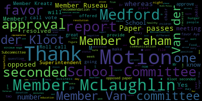
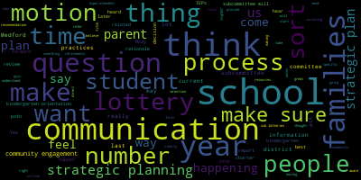
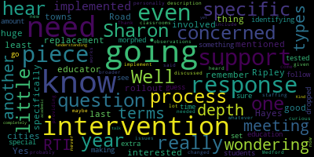
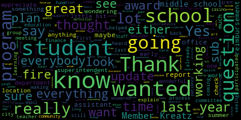
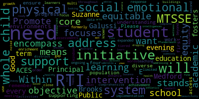

AI-generated transcript of Medford School Committee February 3, 2020
English | español | português | 中国人 | kreyol ayisyen | tiếng việt | ខ្មែរ | русский | عربي | 한국인
Back to all transcripts
[Lungo-Koehn]: Are we ready?
[SPEAKER_28]: Are we ready?
[Lungo-Koehn]: Medford School Committee regular meeting, February 3rd, 2020, in the council chambers, 7 p.m. Roll call vote, Madam Secretary.
[Van der Kloot]: Member McLaughlin.
[McLaughlin]: Here.
[Van der Kloot]: Member Mustone.
[Mustone]: Here.
[Van der Kloot]: Member Ruseau.
[Ruseau]: Present.
[Van der Kloot]: Member Van der Kloot, present. Mayor Lungo-Koehn.
[Lungo-Koehn]: Present. All please rise to salute our flag.
[SPEAKER_26]: I pledge allegiance to the flag of the United States of America, and to the republic for which it stands, one nation, under God, indivisible, with liberty and justice for all.
[Lungo-Koehn]: Approval of the minutes of January 13 2020. Motion to approve by Member Ruseau, seconded by Member Kreatz. Roll call vote.
[Van der Kloot]: Member Graham.
[Graham]: Yes.
[Van der Kloot]: Member Kreatz.
[Hays]: Yes.
[Van der Kloot]: Member McLaughlin.
[McLaughlin]: Yes.
[Van der Kloot]: Member Mustone.
[Mustone]: Yes.
[Van der Kloot]: Member Ruseau.
[Ruseau]: Yes.
[Van der Kloot]: Member Van der Kloot. Yes. Mayor Lungo-Koehn.
[Lungo-Koehn]: Yes. Seven in the affirmative, zero in the negative. Minutes are approved. Approval of bills, transfer of funds, and approval of payrolls. Motion to approve by Member Ruseau. Seconded by Member Graham. Roll call vote.
[Van der Kloot]: Member Graham. Yes. Member Kreatz. Yes. Member McLaughlin. Yes. Member Mustone. Yes. Member Ruseau. Yes. Member Van der Kloot. Yes. Mayor Lungo-Koehn. Yes. Member Kreatz?
[Kreatz]: Oh, yes. I just have a question, and I'm familiar with the report and the reimbursement process. I just wanted to explain to the new committee members, and maybe, Christine, if you could explain, Ms. Patterson, how a teacher or administrator submits a reimbursement, like what's required in order for them to get reimbursed, and do they get full reimbursement?
[Patterson]: Certainly. So for anybody to be paid or reimbursed through the city, we require W-9 for them to be established as a vendor. They would not be submitting or receiving a 1099. It would be documented that this is for reimbursement. We do discourage initial purchases that would include any sales tax. we cannot reimburse sales tax and meals tax, but that's not usually what is submitted. But per Mass General Law, we are an exempt entity, so therefore we cannot reimburse for tax. So we highly encourage everybody to utilize the purchase order system in order to request the goods or materials that they need. or contracted service so that they are not, number one, putting out any of their own funds, and number two, so that there is a full reimbursement as needed. Thank you. Thank you.
[Van der Kloot]: Prior to the report of secretary, I'd like to make a motion to suspend the rules for the purposes of discussing a proclamation to make Medford hunger-free and also to move up community participation.
[Lungo-Koehn]: Hunger Free Pledge. I know we have Sarah McGiven and Carol present. And I will read the proclamation to make Medford hunger free, whereas hunger and poverty are issues of grave concern in the United States, the Commonwealth of Massachusetts, and the city of Medford, whereas Medford is committed to educating people about food insecurity, and the importance of food banks in alleviating hunger in our communities, whereas food insecurity is a persistent and significant reality in Medford, where one in 10 people, one in eight children, and one in 14 seniors do not know where the next meal will come from, whereas the Greater Boston Food Bank and its member agencies provide vital hunger relief services to our most vulnerable neighbors, whereas Medford shall work with hunger relief organizations to make eastern Massachusetts hunger-free by supporting access to three healthy meals a day for our residents in need. Now, therefore, be it resolved that the Medford School Committee does hereby proclaim no later than January 1st, 2028, Medford will be hunger-free and urge all the residents of Medford to take note of this proclamation and participate fittingly in achieving this important goal. And an advisory committee shall be created to provide specific recommendations for achieving this goal. with appointments for one year to include at least a teacher, school administrator, nursing representative, adjustment Councilor, food services representative, and three school committee members. The advisory committee shall provide at least an interim status report within six months of their first meeting and provide a final report to the school committee prior to the end of the one-year term of this advisory committee, given at the City Hall in Medford, Massachusetts this third day in February in the year 2020.
[Tinkin]: Honorable Mayor, Dr. Edouard Vincent, honorable members of the school committee. My name is Carol Tinkin. I am a Medford resident. I live at 261 Governors Avenue. I am also the Chief Operating Officer and the Senior Vice President of Distribution Services at the Greater Boston Food Bank. I am here to commend the city of Medford on this bold step that it's taking to stand up and take leadership to end hunger in Medford and hopefully lead other cities and towns in the Commonwealth of Massachusetts to do the same and take the same step. We all know that children in particular cannot function, cannot think, cannot act without decent food. Their families cannot support them either without good support and good food and healthy food and nutritious food every day and have access. We also want to thank and commend the City of Medford for the food security task force that it created. The Greater Boston Food Bank has been doing this work for two and a half years, and I want to share that we have seen Medford go from the third most underserved community in eastern Massachusetts by 36%, meaning that they only were processing about one meal a day in the City of Medford to now being over 70% in less than a year. We believe we can continue to close this gap. We want to thank Project Bread, our colleagues. We also want to thank the Unitarian Universalist, sorry, St. Ray's and St. Francis for the work that they've done. And we also, I would be remiss in not recognizing members of the school committee, especially Mia Mostone, who's been working with us very closely during this time. Thank you, Mayor. Thank you. Oh, the YMCA in Malden, sorry.
[Lungo-Koehn]: Yes, YMCA, it's great.
[Sara McGivern]: Hi, I'm Sara McGivern, 63 Watervale Road. I'm the Mass in Motion Coordinator in the Board of Health, and I'm the coordinator of the Medford Food Security Task Force. We convened about two years ago because we saw that there was need for different entities in the community to work together and to have common goals on getting our city hunger-free. Just past two years. It's been amazing. We actually just published this food plan about two months ago Short versions of it There are some some recommendations in there for what we can do to work on getting our city to become hunger free. I think this year is going to be a really great year of action. We've been doing planning and now we're going to be taking steps to really eradicate hunger. There's already a lot of action taking place, but it's going to be a unified group effort. I guess don't have anything else to say. Thanks.
[Lungo-Koehn]: Member McLaughlin.
[McLaughlin]: I wanted to thank you and Mia for introducing me to the Food Security Task Force and Shira and Carol and Sarah Klugisch and all the folks in Medford who are working on this really important issue. I learned two very important things from the Food Security Task Force when I attended their meeting. And one was that I said, you know, why don't you just call it hunger? And you know, why do you keep calling it food insecurity? What does that actually mean? And they shared with me that we're all hungry every day, but food insecurity is very different than being hungry. Hungry, we know when our next meal is coming. Food insecurity is when you don't know where your next meal is coming from and how you'll get it. And that really stood out to me. And also where they were sharing the one in nine Medford households experience food insecurity. And one of the things that the food, task force really wanted to work on was de-stigmatizing food insecurity because often it's the case that we know people that are experiencing food insecurity and they're not sharing that with us because of the stigma attached to having food insecurity and being hungry. So I really applaud the work of the Food Security Task Force. And thank you, Mia, and all for bringing it forward. And I would encourage community members to attend the meetings and get involved as much as you can, because I know that none of us want to see a child hungry. Thank you.
[Van der Kloot]: Thank you. Member van de Kloot. I just want to say thank you to all those involved. This is a great thing. And motion for approval.
[Lungo-Koehn]: Member Ruseau?
[Ruseau]: I'll second the motion. And I also wanted to add that I look forward to the advisory committee. I've been pretty vocal on this proclamation that as much as the proclamation feels good, the proclamation won't help anybody. with their food insecurity. So it's important that we have actions coming out of this, and I look forward to hopefully being part of this advisory committee to figure out what we can do in our schools, understanding what it would cost, and really making sure that we are closing the gap as needed here. Thank you.
[Lungo-Koehn]: Thank you. Motion for approval by Member Van der Kloot, seconded by Member Ruseau. Roll call vote, please. Roll call vote has been requested.
[Van der Kloot]: Member Graham?
[Graham]: Yes.
[Van der Kloot]: Member Kreatz?
[Kreatz]: Yes.
[Van der Kloot]: Member McLaughlin?
[McLaughlin]: Yes.
[Van der Kloot]: Member Mustone?
[Mustone]: Yes.
[Van der Kloot]: Member Ruseau?
[Ruseau]: Yes.
[Van der Kloot]: Member Van der Kloot? Yes. Mayor Lungo-Koehn?
[Lungo-Koehn]: Yes. 7 in the affirmative, 0 in the negative. The paper passes. This proclamation will now go to the City Council tomorrow night and hopefully as one unified While we're under suspension, member Van der Kloot, resolution number five, as well as participation from our students that we have here. Is that correct? Be it resolved that the Medford, this is offered by myself, with regards to the minimum wage question that a number of us have been asked. Be it resolved that the school committee hold a committee of the whole meeting to discuss minimum wage for all employees. Be it further resolved that the administration provide the school committee with a list of all do not receive minimum wage and what the cost per year would be to make that change. I know there are a number of people that want to speak on that so we'll open up the floor to you and hopefully within the next 30 to 40 days we will hold a committee of the whole to get all the facts and figures before us as well as the law.
[Christensen]: Hello, my name is Brenna Christensen, and I'm a senior at Medford High School, and I've had the wonderful opportunity to work at the Brooks Afterschool Program for two years. I want to thank the mayor, the superintendent, assistant superintendent, and school committee members for listening to our concerns regarding our wages. Working at the Brooks Afterschool Program is truly my favorite part of the day. I've had the pleasure of working there and grew such a strong bond with my co-workers and the students. As a high school assistant, we are the ones who fill in for when group leaders are out sick or when there is a day where the program is severely understaffed. I have missed countless practices, school events, and more because I knew how badly understaffed work was and how desperately they needed our help. As a Mustang, I've always been told that when there's a concern or an issue, to use your voice. When the high school afterschool workers and I had been continuously given dismissive answers to our minimum wage questions, it was clear that we were getting taken advantage of and it was time to come together and raise our concerns. Because there is no afterschool union, us teams have formed our own group to work together to try and seek a resolution. The Medford public school system should be proud that they have taught us to ask questions, seek clarification, and to stand up for what is right. As I know how much the after-school program means to the city, transparency and fair wages within our job means as much to us. Myself, along with many of my co-workers, will be heading off to college soon, and I want to make this important job, one that I love so much, fair to those who will eventually take my place. Thank you.
[Ansah]: Thank you. Hi, my name is Sawong Ansah, and I'm a senior at Medford High School. I, along with Brenna, started working at the Brooks Afterschool in September of 2018. When many of us first started working at the afterschool, we were making $11 an hour, which was the minimum wage at the time. We were told when we took the job that we would be getting paid minimum wage, and none of us had any idea that our wage would not rise when the minimum wage increased in January of 2019. We made repeated inquiries during the 2019 year, but it seemed like no one had answers to give us. In retrospect, it seems like everyone was taking advantage of the fact that we were kids and unwilling to question authority. Finally, the issue of our pay was brought up at the November 18, 2019 school committee meeting, which many of you took issue with. Mayor Burke then went on record saying that as of January 2020, we must be paid $13 an hour. We were overjoyed to hear this, and many of us did not raise the issue further, assuming that our wages would increase, as was promised to us. Now that it is 2020 and our wages have not increased, many of us have had enough. We keep getting told to wait, or to consider how expensive it is to increase our wages, and that everyone is on our side, despite the fact that this issue has been going on for over a year. At the end of the day, it is not fair that we are doing a job that the city needs us to do, and we are not getting compensated fairly for it. Thank you.
[Klein]: Good evening. My name is Rachel Klein, and I'm also a senior. Thank you for the opportunity to address you this evening. As previously mentioned, the afterschool aides waited for a year to get any response back about our situation. It is only now that we were told that Medford is supposedly exempt from minimum wage law. because of section 454.27.06 in the Code of Massachusetts Regulations. If Medford is exempt, this is something that we should have been told the minute our wages stopped corresponding with the minimum wage, but we were only told this two weeks ago. The law states that to be exempt from minimum wage law, the city needs to have a waiver from the state. When we were told this, we asked to see that certificate. We still have not seen it. So we're gonna ask again today that you guys produce the certificate without delay. But at the end of the day, this is more than about just the law. This is about fundamental fairness. Over the course of the past year, representations were continually made to us that the wage issue would be taken care of, culminating at that school committee meeting in November, where we were promised to get $13 an hour for our work. Many of you went on record taking issue with the situation at the afterschool. We work hard in the afterschool every day, and we are an essential part of the program. We often come in at a moment's notice because the program is short-staffed on that particular day, yet we still continue to be undervalued and underpaid. We are performing a job that the city needs us to do, and we're giving up our free days to help make sure this program runs, and yet we are making less than minimum wage. We have patiently waited for over a year only to be told at the 11th hour that the program and the city are exempt from minimum wage. We had continued to work this past year based on representations made to us that the wage issue was being taken care of. In order to make this right, we deserve to be paid minimum wage going forward and to get retroactive pay starting from when the issue first began. We truly do want to reach a resolution quietly and as soon as possible, but going forward in this process, we need to be much more informed and involved with these decisions. Thank you for your time and consideration, and I hope we can work things out. We also have a letter from a parent at the afterschool who wanted to, who couldn't be here tonight.
[Donlan]: My name is Nancy Donlan. I'm one of the teachers at the high school and I'm here because I'm familiar with the issue. Many, if not most of the students involved in this, I'm familiar with. I've had them in class. I've taught in Medford for 19 years. They are without question the most intelligent, lovely, um, extremely valued young people that you could meet anywhere. And I'm, but I'm here because, One of the students involved in this said last week that she wished she'd never signed the petition. And when I inquired about that, she said, I wish I never signed it because we're getting so much negativity directed to us by administrators, by faculty, by our fellow students. And quite honestly, that upsets me to no end. These are young people that have have really gone way out of their way to advocate for themselves. And as a teacher, I feel that that's one of my most primary responsibilities, to get my students to be able to advocate for themselves. Secondarily, the social studies curriculum is changing in a fundamental way to incorporate civics into the new instruction. We can't pick and choose what civic issues we think are important for our students to engage in and which ones aren't. If the advocacy that they take for themselves happens to be with language that we may feel is inappropriate or not quite at an adult or professional level, they're young people. And our job is to teach them how to bring their ideas and how to bring their concerns to a place where they can engage civically and ultimately resolve the issue, perhaps to their advantage or not, but to really take those steps to advocate for themselves. It was very disheartening to hear a student say that I wished I never put my name to the petition because of the way in which we're being treated for our advocacy. I hope you very sincerely recognize and applaud the advocacy steps that they've taken, irregardless of how this issue is resolved. They are outstanding students. We all should be proud of them. And we should really applaud that they're doing the steps that we've taught them in a civil society as to how people resolve their issues. Thank you. I appreciate the opportunity to speak. Thank you. Member Kreatz.
[Kreatz]: First, I have to disclose that my sister works as an assistant group leader in the after school program and I already completed a disclosure of appearance of conflict of interest form and I submitted it with the city clerk's office last Thursday so I could speak this evening. After learning, immediately after the school committee meeting in November, I heard from some students and they had told me that they were still making the minimum wage, which was the $11 an hour. So I was a little confused because I thought that everybody was making above that, which was between the 12 and then going up to the 13. So I had sent a message off to the assistant superintendent's office, and she was, sorry, assistant superintendent of finance, and she was going to look into, let's see, look into an option and explore a way that we can increase it in the budget level. And I just want to say that I really appreciate everything that you do in the after school program. I volunteered at the Brooks, the Roberts, and I've been to the McGlynn after school programs. And I've observed and participated and helped out in the program. And it's very well structured. There's a curriculum. It starts off with physical education, either inside or outside, then everybody goes back indoors and they're doing either story time in the younger groups, arts and crafts activities, then there's homework time, and then there's some free time, and I've spent the afternoon until it's pickup time with the classrooms that I've been in. And it's just been a wonderful experience for me. And I've seen and see exactly what you do on the floor and in the schools working with the students and how they look up to you as role models and how they really appreciate everything that you're doing and just that you're a student working with another student. It's just wonderful seeing everything that you're doing in the program. So I just wanted to say thank you and I am very proud of everything that you do in the program and for coming out here tonight and advocating for the after school program. Thank you.
[Lungo-Koehn]: Member McLaughlin.
[McLaughlin]: Thank the students for coming out tonight and their family and say that I'm proud of you for your self-advocacy skills. Advocating and getting up in a microphone with lots of people looking at you in a whole room full of adults can be intimidating and it's really shows us all something that Medford should be proud of. teaching you all to do this, and we appreciate that you came out in front of everybody to do that. If I understood what you were saying correctly, you were looking for the retroactive for the $13 an hour that the mayor had, previous mayor, Mayor Burke, had suggested in January 2020 would be the current rate and a waiver of the certificate that you were wanting to see. I think those were the three items. Wanted to clarify on that. And then also wanted to make sure, Mayor Kern, that the students know what a committee of the whole meeting is. And maybe, I don't know if you want to explain that so that they could understand. And that if you're interested in participating, that's a public meeting and something that you get to see a lot of what happens behind the scenes in those meetings. And they're good to come to to learn more as well.
[Lungo-Koehn]: Committee of the whole meeting is a meeting that we have that isn't so formal. Sometimes we had one today at 5.30. That one was televised. This may be a little bit different. We were talking about personnel, so we may have to go into executive session where we have to speak about personnel matters behind closed doors, but we can reconvene after we figure things out and make a full report, whether it's that night or after that night, letting the public know what facts and figures, anything that's public, we can release that afterwards. Also, I know this may affect other positions in the budget, so we really need to give our finance department a little, even if it's a couple of weeks, just to get facts and figures before us so that we have the answers to the questions we're all going to have in committee of the whole meeting. I think two weeks, maybe Ms. Patterson can enlighten us on how long that might take just make sure we know every single position that will be affected, how many we have in that position, just like my motion reads. So I would hope within two weeks.
[McLaughlin]: So point of clarification, the committee of the whole meeting is actually going to be an executive committee meeting, not a committee of the whole meeting.
[Lungo-Koehn]: Not necessarily, but if we're going to talk about different people in different positions, then yes, parts of it would have to go into executive session.
[McLaughlin]: But then the other parts are?
[Lungo-Koehn]: We can just, yep, whatever has to go into executive session, whether that's five, 10, 20 minutes to an hour, and then you can open it up to the general public. Member van de Kloot.
[Van der Kloot]: Yes, I think my colleagues have summed up many of the discussion points, but I feel particularly disheartened to hear from Ms. Donlon that any student felt that they were getting negative feedback because of this. And I just want to say, and add my voice, that I applaud you for coming forward and for advocating for yourself. That is exactly what we want you to do. And we're appreciative of your time and presence here this evening.
[Lungo-Koehn]: Thank you. Member Graham.
[Graham]: I mostly echo what Paulette had to say. And I think one of the hardest things about advocacy is it takes a lot of personal conviction. And I think you guys all quite clearly have that level of personal conviction. So regardless of what anybody says to you or what the answer is, I think the cornerstone of advocacy is that if you believe in what you're advocating for, Don't let anybody tell you differently. So please keep doing what you're doing. We've clearly taught you well. And I would also say that there's lots of ways to feel regret and to feel like you're getting messages. And some of those feelings can come from unspoken. comments or unspoken body language, and others can come from actual direct communication that has made you feel that way. And what I would encourage you all to do is that if there are things being directly spoken to you that make you feel like you are being penalized, I would ask you to think about coming forward to either Superintendent Edouard-Vincent or Superintendent Diane Caldwell, Assistant Superintendent Diane Caldwell, and to make sure that they understand where that's coming from so that if there is a systemic issue, we can address it.
[Lungo-Koehn]: Member Ruseau.
[Ruseau]: I just would like to quickly point out, though, that when we have our committee of the whole, the only moment we will be talking in executive session is when we are discussing something that is allowed, and we will not also talk about other stuff. That's a really important point. We can't go into executive session to discuss employees that perhaps are under a contract and then also talk about employees that are not under a contract. we have to literally divide our conversation very clearly, so there won't be any like, you come into the room, we're talking, we're gonna go to executive session, and we come out and we've talked about you or what this topic. So it's really important to note that executive session has very strict rules that we have to always kind of enforce with each other, like, no, you can't talk about that. We really do that, because the law is very explicit about what we can and cannot talk about in those meetings. So I do think the committee of the whole, obviously, I would make a motion to approve this. But if we do have executive session portion, which we may have to have, because if there's an effect on employees with a contract, we can't discuss that in the public. it won't be most of the meeting. You definitely want to stick around.
[Lungo-Koehn]: Motion for approval by Member Ruseau, seconded by Member Kreatz. All those in favor? Aye. All those opposed? Superintendent?
[Edouard-Vincent]: And I just want to address our students and say that yes, we definitely, Medford Public Schools really endorses and believes strongly in leadership skills. The teacher in me was listening to your persuasive arguments and how well written and how wonderfully you all presented this evening. And again, advocacy is truly important. It's an important skill that we want to continue to develop in all of our students. And again, we will take everything that was said this evening and the previous meetings that have already taken place and moving forward with the future committee of the whole to truly reflect on everything and address many of the concerns that were said this morning. I do not want anyone leaving here thinking that we do not support and encourage student advocacy and leadership skills and that is definitely a strong skill set that is developed in Medford and I want to see more of that skill set developed. I also want to thank Ms. Donlin for sharing and also being a courageous teacher to come up and share with us this evening, you know, her thoughts and the information that she had. So thank you. And thank you to parents for supporting their children. This is a wonderful family community and engagement. Thank you.
[Lungo-Koehn]: Thank you. Member McLaughlin.
[McLaughlin]: Just another point of clarification, I'm wondering how the students will be informed of the committee of the whole meeting date. They are posted online, but that means you have to go and look and check online. Is there a way that we can push information to the students and to the after school program about the date?
[Edouard-Vincent]: Once it's scheduled, yes. I can actually work with Ms. Donlin as well. Thank you. Thank you.
[Van der Kloot]: While we heard from students involved in the after school program, we have other students who work for us. And it would only be equitable to understand the full breadth of student employees. For instance, we have students who are lifeguards. That's part of the motion.
[Lungo-Koehn]: That all those paid under minimum wage, we get a tally of that, how much that's going to cost to increase. Thank you. Motion for approval has been passed. Motion approval set. Thanks. While we're under suspension, we have Toni Wray in the audience for an update from the nursing department.
[Wray]: information coming out of the Massachusetts Department of Public Health and the CDC around the coronavirus. I have some handouts. Okay. We are continuing to monitor this information very closely. This morning, Mary Ann O'Connor, who is the director of the Medford Board of Health, Janet Leahy, who is a public health nurse, and myself participated in a teleconference with the officials from the Massachusetts Department of Public Health. At this time, they informed us that the risk for Massachusetts citizens to become ill with the coronavirus is very low. What we learned from this teleconference this morning, the CDC is conducting screening for illness among passengers who are traveling from China to the United States at 11 designated airports. Travelers who are arriving from the Hubei province will be screened and subject to mandatory quarantine for 14 days. Federal officials are advising travelers who arrive from mainland China to the United States anytime after February 2nd, which was yesterday, to self-quarantine at home for 14 days. Thank you. The CDC is monitoring this rapidly changing situation and they provide regular updates through their websites and also to local public health authorities across the nation. There are two links to information that I gave you. Both of them are the handouts. One of them is the novel coronavirus and you, which provides information about the virus and how you can help prevent it, as well as what should the public do, which has some very concrete steps for the public to use to avoid getting the virus. At this time, I have to mention that this is also influenza season, so we are seeing a lot of influenza-like illness in our schools and in the community. School nurses are closely monitoring symptoms from students and reminding parents to keep children home if they are symptomatic with a fever and other signs of influenza. We're also asking people to practice good hand washing and coughing. techniques and these are being enforced with the students in school by the school nurses. Any students who are ill such as having a fever or symptoms are being sent home as a way to contain the infection in the community. We want to remind you that students can return to school once they're fever free for 24 hours without medication and as well that there's still time to get a flu vaccine. We also want to reassure you that we are monitoring this situation very closely and staying informed of the latest recommendations out of our public health authorities. And we will continue to share this with you as it unfolds to us.
[Lungo-Koehn]: Thank you.
[Ruseau]: Member Ruseau. Thank you for that report. I really do appreciate it. If somebody's identified as needing quarantine, I presume, or self-quarantine, is Medford notified that this is a resident?
[Wray]: No.
[Ruseau]: No.
[Wray]: Not to my knowledge, no. Medford meaning?
[Ruseau]: I mean, does the town, wherever the person lives, they get off the plane and they are identified as somebody who does need to be self-quarantined? Maybe I don't understand self-quarantine then.
[Wray]: They're being given handouts from the CDC screeners at the airports that outlines the steps to be taken and explains what that is. I probably shouldn't have jumped to say no, that they're not notified. I don't think the local boards of health are notified of those who are self-quarantining, because most of those people may be coming from that region, but they may be likely asymptomatic.
[Ruseau]: And so, but when somebody is quarantined because they're symptomatic.
[Wray]: That's different.
[Ruseau]: They don't get to go home.
[Wray]: Right. Okay.
[Ruseau]: Thank you.
[Wray]: At the airports, they're quarantining them on military bases and those type of facilities. Thank you.
[Lungo-Koehn]: Member McLaughlin.
[McLaughlin]: Thank you for your report. You're welcome. Tony. I had a question on the communication that you sent out where It says federal officials are advising travelers who arrive in the US after February 2nd from mainland China to self-quarantine at home for 14 days. So this is getting to Member Ruseau's point about the self-quarantine. So do we have any mechanism in our school to understand if we have school community members that have traveled to China in the past 14 days?
[Wray]: Yes. If parents have reported to their administration that they are you know, away for a vacation. This is a really typical time for Chinese families to return for Chinese New Year. And we have people who may be over there on business. I mean, there's many different reasons people, you know, travel to China. Sometimes we do, you know, we are aware of that. So we're doing our best to work with those families and provide education so that they understand what constitutes symptomatic and what all of these recommendations mean.
[McLaughlin]: And if I understand the correspondence, though, it's whether they're symptomatic or asymptomatic that they're recommending a 14-day self-quarantine. Is that right? Right, asymptomatic. Yeah. And so, but there's no real enforcement of it. Is that accurate?
[Wray]: Those that we are aware of, yes, we're monitoring. We're watching that they're staying home. I mean, we're doing the best we can.
[McLaughlin]: Sure, of course. But I mean, there's no, from the public health officials or anything like that, there's no way to track or enforce or anything like that, right? Not to my knowledge.
[Wray]: Is Marianne O'Connor still here? No, no.
[McLaughlin]: And is this more significant? I don't know. been watching it all on the news, because sometimes I feel like there can be elements of hysteria to these things, too. But is there... There are a lot of elements to hysteria. Is this different from a typical flu?
[Wray]: Actually, you're at more risk of contracting the flu right now than you are of contracting coronavirus. Okay. Especially influenza B. That seems to be what is being cultured out with people who are symptomatic with flu-like illness symptoms. you're much more at risk of that. And more people in the United States die of influenza than people who have died of coronavirus.
[McLaughlin]: Thank you. That helps, I think, with a little bit, perhaps, with the hysteria piece of it. And then is the symptomatic, are the symptoms, you know, more severe than the average flu or? They tend to be lower respiratory symptoms.
[Wray]: So a deep cough, shortness of breath, chest pain, which is often a little bit different than flu. Flu, you'll have the cough, The cough, sneezing, the body aches, the fever. But the lower respiratory symptoms seem to be what delineate this from other respiratory illnesses.
[McLaughlin]: »» Thank you so much for your expertise. Appreciate it.
[Lungo-Koehn]: »» Thank you. Motion to receive and place on file? Okay. Thank you. Member Graham.
[Graham]: »» Can I just ask one more question before you leave the microphone? Maybe two? Is Logan one of the 11 designated airports? »» No. And for those families who are returning that we're aware of, I think what I heard you say, and I just want to make sure I understand, is you're attempting to get in touch with those families, making sure they're aware of the federal recommendation that they self-quarantine, but they can choose not to, and they can choose to send their children to school. Is that what I heard?
[Wray]: Yes, and the word we had from this phone, this teleconference this morning is for children that who are symptomatic, asymptomatic, excuse me, there are no restrictions on their activity. So people are being voluntarily, you know, asked to voluntary self-quarantine. And so... So there's many other communities across the Commonwealth that are in a similar situation as we are.
[Graham]: And are they all sort of approaching this the same way, which is it sounds like to make sure the families are aware of the recommendation and then the families make that decision to either send or not?
[Wray]: We're all trying to transmit the same message that's coming from the CDC and the local boards of health.
[Graham]: And do you have any words of comfort maybe to offer the community that has not traveled to China but hears about, back to the hysteria, but hears about students returning from China who may be attending school, whether that's parents of students or staff or administrators.
[Wray]: I think what's helpful is looking at when families have returned because the CDC has designated February 2nd as the date for the quarantines to start. The further backwards that you came into the country from February 2nd, let's say you came in mid-January or early January, those people are less likely. Their risk of contracting that disease was very low compared to people who are coming, maybe coming in after February 2nd. There's more disease in China right now, and it has been slowly increasing. So if you came in three weeks ago, two weeks ago, one week ago, the risk of your infection was less.
[Lungo-Koehn]: Thank you. Motion to receive and place on file by Member Van der Kloot, seconded by Member McLaughlin. All those in favor? All those opposed? Motion to revert back to the regular order of business by Member Van der Kloot, report of secretary.
[Van der Kloot]: I have several things to bring to your attention. At our last school committee meeting, Member McLaughlin asked, and it was reflected in our minutes, about the conversations with non-English speaking families from the health office, and we talked about a translation service that were used. So I pulled one of the bills so that you could see it. I want to note that the names that are on it are not student names. They are, in fact, the employees. But I thought you would just be interested. You can see that sometimes the conference is only two minutes, and sometimes it's 14 minutes. But this is that we employ a service to help with the translation. So I brought that in. I'm going to pass them around. And I would ask that they all, they are copies, but if you just return them to me, I'd appreciate it. Secondarily, and this is kind of an ode to my former colleague, our former colleague, Erinda Benedetto, I pulled a bill that was for professional cleaning. Whenever I see professional odor remediation services that piqued my interest so I followed it up. It had to do with the Curtis-Tufts. They had a problem in the library classroom. So on December 26th, when students were not in the building, they brought in ServPro to help remediate that issue. And so you'll see that bill. Lastly, I just thought you might be interested that we have received new textbooks for our students for our civic education in grade 7. And I brought in the bills for you to see that. Unfortunately, much to my dismay, I realized that they are already out of date as I couldn't help but look under impeach. And it mentioned that only, you know, two presidents have been impeached. And so, we are obviously, our teachers are going to have to update that information. But there is also a teacher. So, I brought them in just so you could see and know that these resources have been brought to our students. Thank you.
[Lungo-Koehn]: Motion for approval of the report? Please on file. Motion to receive and place on file by Member Van der Kloot, seconded by Member Kreatz. All those in favor? All those opposed? Motion is received and placed on file.
[Van der Kloot]: One further thing. I just want to extend again an invitation to any other member. I've been getting there on Wednesdays about 10, 15. And if anybody does want to join me, if you give me a heads up, then I'll make sure my timing's more exact. But please do feel free to come and join on Wednesdays up at the high school.
[Lungo-Koehn]: Thank you. Thank you. We have community participation. Hearing and seeing none. report of superintendent.
[Edouard-Vincent]: Good evening, everyone. I'm pleased to announce that last Friday, the Medford Public Schools unveiled its brand new website. The former website was developed in 2007. Over the course of the past two years, Allison Goldsberry, our webmaster, has been very busy, diligently researching other school system websites, discussing what works as well as what doesn't work with different focus groups, which included staff, parents, and students. She worked both with Tufts University students and our own vocational media students to put together a comprehensive more visual, and user-friendly site. As we are all aware, a website is a constant work in progress, but we feel the new site is very welcoming and helps to address many more of our needs. We encourage everyone to visit it and let us know what you think. I'd like to thank Allison Goldsberry, our webmaster, Tufts University students, and our own vocational media technology students for all of their time, hard work, efforts in updating the new website. As we just heard, I want to just highlight again the important health update on coronavirus. And I want to just thank our nursing director, Toni Wray, supervisor of health services for Medford Public Schools for presenting that timely information to the community this evening. Additionally, I want to recognize Team Medford, Maryann O'Connor, and I know your Chief of Staff, Mr. Rodriguez, and the Nursing Director here, Janet Leahy, for working collaboratively with Medford Public Schools to come up with an official, formal response as a city. Moving along, I want to recognize some of our CCSR students at the McGlynn Middle School. McGlynn Middle School was recently featured on Channel 4. The program, The Lookup Challenge, does just that. It challenges students to put down their phones and head out to play, read a good book, or just have a conversation with family and friends. Look Up Live is a non-profit startup whose mission is to support youth design solutions for technology and real life balance. Since before the holiday vacation, McGlynn Middle School students have been challenged to reflect upon how they can take a more balanced approach with their use of technology. In addition to that, this project was funded by the Cummings Foundation and the Crystal Campbell Community Betterment Fund, so we would like to thank them also for their continued support of Medford Public Schools. I also want to thank Brookline Bank and Members Plus Credit Union for their introduction to financial literacy. They presented to our eighth grade students at both the Andrews and McGlynn middle schools. The bankers presented very clear objectives. They engaged students in discussions on topics related to personal finance while making important connections with math in the classroom to their everyday lives. The bankers intend on making this an annual event. We appreciate their partnership with the Medford Public Schools. Later this evening, during our meeting tonight, Dr. Riccadeli will be explaining the middle school lottery process in detail. However, I wanted to just quickly share the schedule for informational meetings for fifth grade families, which I will host at each of our four elementary schools. The meetings will be posted on the blog and on our website, and fifth grade parents will also receive an invitation from their respective principal. The meeting schedule will be as follows. Tuesday, March 3rd, from 5.30 to 6.30, Brooks Elementary School, in the library. Thursday, March 5th, from 5.30 to 6.30, Roberts Elementary School, in the library. Tuesday, March 10, from 5 to 6 o'clock, McGlynn Elementary School in the library. And also on Tuesday, March 10, from 6.30 to 7.30, Columbus Elementary School in the evening in their library. Please be advised that this Wednesday, from 7 to 8.30 PM, in our Karen Theater at Medford High School will be course selection night for our eighth grade students who will be attending the high school complex next year. Parents, guardians, caregivers, and students, you're all urged to please attend. In the sports arena, middle school basketball, our Mustang middle school basketball program had a very successful season. The boys team finished with a 9-1 record. The girls team just finished and they were at eight and two, but actually since they just won the game this evening, they played against Everett and the girls won this evening, 34-32. That would have been a nail biter. A great game to have watched. So congratulations to both our boys and girls basketball teams. The boys game tomorrow, their final, will take place tomorrow and the girls final will take place in Revere on Wednesday. Tristan Howard, one of our great athletes at Medford High School, last Sunday at the MSTCA Boys and Girls Coaches Invitational held at the Reggie Lewis Center. Tristan Howard, our own Mustang, He won the 55-meter dash with a time of 6.56 seconds. Amazingly, he shares the title with Lawrence High School student Jeremiel German. They finished together in a dead heat. So the people who were at Reggie Lewis said it was another nail-biter, fascinating, exciting race, but just wonderful things that are happening with our own Mustangs. Sunday, the Medford girls varsity indoor track team finished in second place. This is again, our greater Boston league track championship. We finished right behind Malden with a total of 88 points. Five of the girls finished first in the following races. I just want to recognize them. We have junior Anaya Crump. She won the 300 meters. Sophomore Caressa Andrews won the high jump. Freshman. Anna Casey won the 600 meters. Freshman Ayazmin D'Souza-Vieira won the 1,000 meters. And freshman Maria Colombo won the two mile run. Congratulations to all of our athletes, our girls, varsity indoor track team members. I also want to just highlight another community outreach program. The Columbus School participated in Pennies for Patients. which raises money for Leukemia Society. And the Columbus School collected $3,336.59. Mrs. Galizo's class was raised the most out of that fundraising. Her classroom alone raised $936 in pennies, which is truly outstanding for the school. They were awarded a pizza party from the Leukemia Society for their outstanding efforts. And we want to say a special thank you to Assistant Principal Nancy Sherman Hudson, who led this important fundraising event. Great job, Columbus School. Please keep up the good work. So at the beginning of January, the Medford Vocational Technical High School's DECA program competed in the District Six competition held at Endicott College in Beverly. Students competed in business, law, and ethics, apparel and accessories marketing, automotive services marketing, entrepreneurship, human resource management, Quick Service Restaurant Management, Restaurant and Food Service Management, and Sports and Entertainment Marketing. Congratulations are in order for David Mai and Nevaeh Clark, who placed third in the Apparel and Accessories Marketing. Ruth McLaughlin and Nick Gomes, who placed third in Automotive Service Marketing. In late February, these students will be competing at the DECA State Tournament at the Copley Plaza Hotel in Boston in the hopes of qualifying for the international DECA competition being held in Nashville in April. And Mr. Principal Chad Fallon will present to you a little later this evening. I am pleased to also announce two of our fine arts students who were selected to the prestigious Massachusetts Music Educators District Junior Festival. Two of our trombonists have been accepted to this prestigious Massachusetts Music Educators Association Northeast District Junior Festival due to their successful audition on Saturday. They are none other than our Medford High School freshman, Tegan Mustone, the name sounds familiar, offspring of our wonderful member, Ms. Mia Mustone, and Andrews Middle School seventh grader, Kian Leo. who were selected to rehearse and perform with the festival band under a guest conductor with other students from across Northeastern Massachusetts. The concert will be held at the Gavin Middle School in Wakefield in March. Congratulations to our fine arts students. In addition, I'm also pleased to announce that two McGlynn Middle School students received regional awards in the 2019-2020 Massachusetts Scholastic Art and Writing Awards Program. Sofia Hernandez won a gold key, and Kenza Balula won a silver key. Medford has had a number of students receive honorable mentions, but being named gold and silver key winners is a great honor. They will be presented with their awards in March at Tufts University. Congratulations to these students, fantastic job. Just a reminder, coming up this Saturday, the Medford Family Network's annual Valentine's Day Festival, Ice Cream Social, is being held this Saturday at the McGlynn School Cafeteria from 11 a.m. until 1.30. All of you are invited to support the Ice Cream Social and Medford Family Network. It is always a great event. Last week, I had the opportunity to participate in cookies in Convo at the high school. And I just had an opportunity to connect with staff and teachers during their lunch break over cookies and just talk and hear feedback and just have wonderful conversation. And I look forward to spreading that out to additional schools. But I was very pleased with the teachers who were able to avail themselves to participate in that. Additionally, earlier today, I had the opportunity to be with Global Scholars, which is one of our special programs that runs at the middle school levels, along with Dr. Riccardelli, our Director of Curriculum. We were able to look at instruction, teachers got to talk and really listen to students during their student panel, getting feedback from eighth graders on what they thought were the strengths and suggestions for how that special program can continue to improve. And so that was a wonderful opportunity that happened just earlier today. Lastly, my last invitation is that Mayo-Lungo-Koehn's volunteer members of the transition team, they're going to be hosting a beautification day on Sunday, February 23rd, starting at eight o'clock in the morning at our high school campus. For anyone who may want to join the volunteer crew, we're looking for interested parties. You can contact the mayor's office or contact my office to sign up, and I'd like to just thank everyone, and those are our announcements for today. Thank you, thank you.
[Lungo-Koehn]: Thank you, Superintendent. Recommendation to approve a donation to CCSR, Michael Spalker. Is Michael here? If somebody wants to move to table that.
[Edouard-Vincent]: Yes, I can read it. Medford Center for Citizenship and Social Responsibility was awarded $5,000 as one of the recipients of the $125,000 community fund payment from Encore Boston, granted by the Medford Community Fund. We recommend that the school committee approve this donation.
[Kreatz]: Roll call vote. Member Kreatz. Yes, I just wanted to report out an update about the community fund grant checks. This morning I received an email from Aleesha Nunley, Finance Director Auditor, and the Chief of Staff in the Mayor's Office, Dave Rodriguez, is working on a communications to update everybody about the grant checks. Under the guidance of the Department of Revenue, they're working on a mechanism to fund the awards from the casino to the individual recipients. Since the casino just opened last summer, this is the first time the city has made awards based on the surrounding community agreement. And we want to do this in a legal and in transparent way. So if everybody, we really appreciate your patience. your continued patience and hopefully we'll see an update either on the website or maybe by email sometime this week. Just wanted to share that update.
[Lungo-Koehn]: Thank you, Kathy.
[Kreatz]: You're welcome.
[Lungo-Koehn]: Motion for approval of the 5,000 to CCSR. Roll call vote has been requested. Member Graham?
[Graham]: Yes.
[Van der Kloot]: Yes. Member McLaughlin? Yes. Member Mustone? Yes. Member Ruseau? Yes. Member Van der Kloot? Yes. Mayor Lungo-Koehn?
[Lungo-Koehn]: Yes. All those in favor and opposed, paper passes. Recommendation number three to approve field trip, DECA state competition, Mr. Chad Fallon.
[SPEAKER_25]: Good evening. Good evening.
[Fallon]: I have Nevaeh on my right and Burley on my left. We are here for approval for the DECA state competition which will be held at the Copley Hotel in Boston. Burley, would you like to say something about DECA?
[Viksama]: Yeah. Hi, my name is Burley Viksama and I am a junior at Medford Vocational Technical High School. And DECA is a high school competition for business students, and we compete with other business students around the country. Nevaeh and I will be presenting the SBE manual. The SBE manual is Mustang Travels at states this year. The SBE manual has won states and internationals in the previous year. Mustang Travels is managed by students. It's a service for teachers. It's a easier and affordable process to rent vehicles for field trips. And it will soon be available for surrounding Medford Public Schools. Thank you. Thank you.
[Fallon]: So in a nutshell, we have school vans that we rent out to the community for field trips or for other schools. Sometimes the middle schools will borrow some vans. And these guys came up with a plan to have it almost like a rental agency. So the manual that they created for this before has won in previous years. So they'll be competing on this at the state level. So we're seeking approval for the hotel and the registration costs.
[Lungo-Koehn]: Great. Motion for approval by? Member Van der Kloot, seconded by Member McLaughlin. Member Kreatz.
[Kreatz]: Yes, I just wanted to say, you know, thank you for bringing this report and thank you for coming out and explaining that. I did, and the superintendent answered already, I did have a question like who was going to be competing and she explained it was like the various different programs, the automotive and the, I forget where my list went, but so that answered my other question and I just want to wish the students good luck and I hope to hear and hear back from you after the competition. Thank you. I know. I'll be going. I've never been.
[Lungo-Koehn]: Through the chair, how many days is the competition?
[Fallon]: Thursday night, Friday night, the awards are Saturday.
[Lungo-Koehn]: So they stay two nights in a hotel.
[Fallon]: Thank you.
[Lungo-Koehn]: Good luck. Thank you. Good luck. Motion for approval. All set. Number four, recommendation to approve donation to Medford Vocational Technical High School.
[SPEAKER_28]: Field trip. Field trip. We did, I believe. We did. A roll call for the field trip.
[SPEAKER_17]: Member Graham.
[Van der Kloot]: Yes. Member Franks. Yes. Member McLaughlin.
[Lungo-Koehn]: Yes. All in favor and none in the negative, paper passes. Now number four, recommendation to approve donation to Medford Vocational Technical High School.
[Fallon]: Hi, again. So Steve Nardone, a Medford Vocational Technical High School graduate from the class of 1979, a longtime friend of the school and a successful business owner in the area, has donated some equipment to our program. This isn't the first time, but this is one of the largest donations in a while. And it's worth Adam explaining a little bit more to you about what it is.
[Burns]: Adam Burns, electrical instructor.
[Fallon]: Hello, my name is Adam Burns.
[Burns]: I'm one of the electrical instructors at Medford Vocational Technical High School. The equipment that was donated is in three pieces. I'll go smallest to largest. Smallest is a cordless bandsaw, which the students used to cut steel members and conduit and pipe with. Next up is a seven-foot, 60-position Cat6 rack, which is used to terminate network wiring. The third is the largest is a firearm system that is up to date. It's addressable. It's more advanced than is in most buildings. It was custom made by Nardone Electric and it is mounted on a portable system where students can create addressable firearm systems which are computer controlled and they also send signals out to the fire department. So it's all a big system and each component is addressable. So we have a whole system plus a lot of components for that. And hopefully we're gonna start using it soon.
[Lungo-Koehn]: Member Ruseau.
[Ruseau]: This is amazing. I'm looking at this stuff thinking, like, can we get that in our school? I'm sure we need more than one, though, for our school.
[Burns]: I think they looked at the system for the school buildings, the older school buildings, and it's extremely expensive.
[Ruseau]: That's what I was going to imagine. So I would certainly motion to approve this.
[Kreatz]: Member Kreatz. Yes. So I just wanted to know, so the state-of-the-art fire alarm control panel, so does that, like, are the students going to be learning, like, you know, where they can detect where a fire might be or, yeah, that's what I thought. So, like, it will, like, identify, like, where, like, the location of the fire and then pin it off to the fire department?
[Burns]: Exactly. So in an older system, like in this building, you have zones. This room would be a zone. In newer systems, each, detector is addressable. So each detector can not only tell if there's a fire, it can also tell if it's in trouble. Someone may be tampered with it or if it needs servicing. So the fire department knows exactly which detector to go to. So say they're going to the electrical shop, and the old system would be the electrical shop. So they would have to find it. Now, they would get a signal that would tell them exactly where to go in that building. So that saves time and saves lives eventually.
[Kreatz]: Yep, and that's just, it's amazing. And thank you very much to the Nadon electrical support and for their support. And it's just, it is incredible. And I just thought it was incredible myself. And what does the data rack do? Like, is that like a, like I'm not sure what that is either.
[Burns]: I know, yeah. So in a building, every single data port where every single person plugs in their computer or Wi-Fi port, That is connected to a cable that has to run back to a server. So every single cable on a floor will run back to one server. And those cables have to be punched down to a rack. So it looks sort of like an old-fashioned operating switchboard where you see a lot of plugs. And what this does is it connects the users to the servers in the building. Every building has them. And this is very important now, even though it's not in our frameworks, our advisory board has recommended that our kids learn this stuff, because every single light fixture, from now to the future, forever, is going to be cloud-based computer controlled. So they need, this stuff is not only for data, it's also for lights, fire alarm, cameras, everything. So these electricians have to know this.
[Kreatz]: It's very interesting. Thank you very much. Thank you.
[Lungo-Koehn]: What are these things?
[Kreatz]: Yeah, I just I really didn't know and I didn't Google because I thought I would ask and find out from the experts Thank you very much.
[Lungo-Koehn]: member Van der Kloot?
[Van der Kloot]: I'd like to say thank you to Mr. Nardone and ask that we send out a letter to him I know that I've seen his name for many years giving us different different things and and donations so very appreciative to him. Thank you. We need to do a roll call vote to accept this.
[Lungo-Koehn]: Motion for approval by him. Seconded by Member Kreatz. Roll call vote.
[Van der Kloot]: Member Graham. Member Kreatz. Member McLaughlin. Member Mustone. Member Ruseau. Member Van der Kloot. Yes. Mayor Lungo-Koehn.
[Lungo-Koehn]: Yes. All in favor and opposed. Paper passes. Number five, recommendation to approve donation from Exxon Mobil. Ms. Christine Patterson. Good evening, thank you.
[Patterson]: Yes, so this is a unique circumstance whereby one of our business partners, the Medford Square Mobile Gas Station, submitted a nomination through the ExxonMobil Education Alliance Grant for Medford High School. So I was contacted by the Global Partners Territory Manager that we had been selected through this nomination to receive a $500 grant for Medford High School purposes. So there is a slight additional piece of paperwork that's required for Global Partners to be able to provide and distribute that grant if we do choose to accept it. So the recommendation is to accept the generous donation and to send a thank you letter to Medford Square Mobile Station for its nomination. Thank you. Thank you. Member Kreatz.
[Kreatz]: I just had a quick question. I just wanted to know now, can this award be used for anything? Are there any plans for the award, what they're going to use it for? I did look through it, and I wasn't sure. It says something in math and science for higher education. So I wasn't sure if it was going to a certain department, or was it?
[Patterson]: No, so this would be a general school donation that we would identify through the math and science departments that that was the stipulation of this grant. We have not earmarked it. as of yet, prior to acceptance.
[Lungo-Koehn]: I'm assuming roll call vote is required. Motion for approval by Member Graham, seconded by Member Van der Kloot. Roll call vote is required.
[Van der Kloot]: Member Graham? Yes. Member Kreatz? Yes. Member McLaughlin? Yes. Member Mustone? Yes. Member Ruseau? Yes. Member Van der Kloot, yes. Member Lungo-Koehn? Yes. Mayor Lungo-Koehn.
[Lungo-Koehn]: All those in favor and on the negative, paper passes. Number six, report on personnel activity. Ms. Christine Patterson.
[Patterson]: Thank you. Again, provided just for your awareness is an activity report for this fiscal year beginning July 1st of 2019. And it was current through the January 30th timeframe prior to sending out this packet. I think it's noteworthy to indicate, and I want to thank the business center team, human resources and payroll for processing all of these. As you hear the number of activity, it's quite significant. So the team has onboarded 185 new hires, and that was not including additional pending hires that have not finalized all of their requirements to be entered into payroll. So we've had a significant amount of onboarding, which this is for all employee groups. So this is not just identifying teachers and paras, this is, these are daily subs, these are after school program workers, all categories, 185 new hires. In addition to the new hires, we've processed 38 retirements and or resignations through the district. We've also had significant activity with a total of 61 cases of long-term illnesses, full-year leaves of absence, and workers' compensation cases, of which those we've had to provide additional staffing. So the 185 is also a result of some of this activity based on full-year leaves and long-term leaves. So we still need to cover classrooms, we need to cover the other functions throughout the district when an individual is on said leave. So we have had significant activity and I believe this report is just for your review. Thank you.
[Kreatz]: Member Kreatz. Yes, I just had a quick question because I know this question comes up a lot. What is the difference between a long-term substitute a daily sub and a per diem sub. And I'm just curious, even at my own work where I work at MTRS, it comes up a lot. And each school district has a different definition for what it is in their school district. Some require DESE certification for long-term subs, some don't. The same for per diem and daily subs. So I was just wondering what Medford's definition was. Sure.
[Patterson]: We do have per diem and daily subs. That term is synonymous. So that means that the substitute calls into the sub pool that is open each day as staff members need to call out sick and or be absent for any reason. So our sub pool is active and they are just daily subs. They are not necessarily licensed in that capacity, but they are covering for classes for absences. The long-term subcategory is for a situation where we have an extended leave, that we know somebody may be out due to illness or due to maternity leave, and dependent on the candidate, if they are licensed or not, they would have a different pay rate. So it's dependent on their licensure and the timeline of their coverage.
[Kreatz]: And then I just had one question, because some of the locations were listed as male, like for example, like M-A-I-L for the location. And I was just wondering, what does that mean? It was really just miscellaneous throughout the spreadsheet.
[Patterson]: So this is a report from payroll. So the location just indicates the method on which any checks would be distributed if they received a live check. It would either be mailed, it would be dispersed to each of the building locations based on where that employee was located. And there are some employees that are considered district-wide, so they do move from building to building. OK, thank you.
[Ruseau]: Member Ruseau. I have three questions, since one of them has already been covered. How many hours did it take to create this report? I mean, a ballpark?
[Patterson]: between fine-tuning the report and staff a couple hours.
[Ruseau]: Thank you. On page two, one of the positions is just listed as the title being school. About seven or eight up from the bottom.
[Patterson]: So they would be non-unit members and Again, that's a category that's in the payroll system, and it would likely be referring to a daily sub and just got a school identifier rather than a sub.
[Ruseau]: Oh, I see. OK. That makes sense, because they could be anywhere. Correct. And then on the very last page of the new hires, The first column says non-unit ISS. What's the ISS?
[Patterson]: So the ISS is Instructional Support Staff. Thank you. So it's basically a building-based substitute. So that person is considered a full year. They are assigned to that building, and they are able to be dispersed from the principal based on the need in the building if there's not enough coverage.
[Ruseau]: Thank you.
[Patterson]: Member Graham.
[Graham]: I noticed that in the report there were a number of retirements and about 60% of those retirements were not happening in the summer, but they were happening after the start of the school year. And I was just wondering, is that normal? Is 60% typical? Or is this sort of an anomaly of the year?
[Patterson]: So again, the header is resignations slash retirements. So not all of those are retirements, but we do have retirements that happen outside of just the July and August months. It's dependent on their date of birth in some cases where they're not eligible until certain times of the year. So that is, that's a normal occurrence. But again, all of these are not considered retirements.
[Graham]: So it's normal that 60% of our resignations slash retirements would happen during the school, the operating school year, or is that unusual in some way?
[Patterson]: It's definitely, it shows you the significance of turnover in certain categories of the workforce and that's a norm.
[Graham]: Okay, that's helpful. And then I was also reading that we have like 60, I think it's like 61 people on leave of absence, is that correct?
[Patterson]: No, again, that was total of different types of activity. So we had 11 that are on a full year leave of absence. We had 18 that were on leaves of absence, but we are expecting them to return at some point during the year. 25 have been on a leave of absence and have since returned. And the others were workers comp cases.
[Graham]: And is that Again, is that like a typical year, or is this unusual in some way?
[Patterson]: This has been a bubble year.
[Graham]: OK.
[Lungo-Koehn]: Yes.
[McLaughlin]: Thank you.
[Lungo-Koehn]: Member McLaughlin.
[McLaughlin]: Thank you. Thanks for the report, Assistant Superintendent Patterson. I have a few questions on the resignation and retirements. It looks like since July, we've had eight paras retire or resign? I'm wondering which those are. Are they resign or retire, or do you know?
[Patterson]: The majority are resignations.
[McLaughlin]: Resignations. And do you know, are we filling those positions, or what the status is?
[Patterson]: We've been actively trying to fill all positions. Yes.
[McLaughlin]: So are we down eight paras right now? Do you know?
[Patterson]: We're not down eight paras, no. No.
[McLaughlin]: How many are we down?
[Patterson]: I believe we're down two. I think we've got some pending hires taking place.
[McLaughlin]: OK, so you've hired six of the eight that have, you've replaced six of the eight that have, OK. And so then for substitutes, for the daily substitutes, and the per diem substitutes, and the long term substitutes, I was given information, and I'm wondering if this is helpful or accurate. If there's a para that calls in sick to the special education classrooms, the system comes up as no substitute required. Is that accurate?
[Patterson]: It's dependent on where the para is assigned. So a Gen Ed para is not necessarily filled. We try to go with the high needs groups that we do open a slot for filling. But it's noteworthy to indicate that even without the paras or just the general, the teaching, that it's difficult to fill. And sometimes the nature of when they are providing a sick day or a day that they'll be out, it's too late for the sub-pool to activate. So there's a number of things that are indicative of whether or not a classroom environment is going to be fully covered, and that's where we have the ISSs in the building to provide that additional support.
[McLaughlin]: So how does that work if there's an IEP that's requiring paras in the classroom, if the para's not being replaced if they're out sick?
[Patterson]: That's a totally different scope outside of just this personnel report. I can't speak to that in terms of the IEP requirements.
[McLaughlin]: But in terms of replacing substitutes in the classroom, so regarding the personnel report. So if a para's out, and they're saying no substitute required on the personnel list when a para calls in sick, there's no substitute going into that classroom. And I guess these are also high needs classrooms. They're not gen ed.
[Patterson]: If they are high needs, it is usually open to the sub pool. Whether or not we get an active substitute for that, it's not determined if it's actually filled. We don't dictate those slots. So the pool is open to anybody that's assigned as a daily sub, and they actually select which placements that they will go on a given day. So even if a para position opened up that a substitute was required, there's no guarantee that it would get filled. Sure, I understand that. It's not guaranteed that an elementary teacher at one of the other schools would be filled either.
[McLaughlin]: Sure, I understand that. But is the system, is the software system coming up saying no substitute required, which obviously if that's what it's saying then there's definitely not going to be a substitute, never mind whether there are any available or not, that's what I'm asking.
[Patterson]: No, the majority are open for substitutes.
[McLaughlin]: Are open no substitutes?
[Patterson]: Are open for substitutes.
[McLaughlin]: Oh, open for substitutes. In what instance would it say no substitute required?
[Patterson]: If it was identified as a gen ed and not required for the para coverage. So the initial intent of the system was to provide coverage for the teachers in the classroom. So that had been the the focus to provide coverage as the teacher. So in terms of the paras, those with the exception of the high needs classrooms that they always need coverage, it had been closed off that a para might not necessarily have coverage.
[McLaughlin]: OK. So I guess I'm wondering, is it a personnel question or a special ed question that I should be directing this if there are high needs classrooms where a para is calling in sick and the personnel memo that comes up on the, whatever your software system is on the website, that says no substitute required. How is that addressed? Would that be personnel? Would that be special education?
[Patterson]: Yes. We would certainly, if there was somebody that was erroneously categorized as not requiring a sub, we would certainly change that.
[McLaughlin]: OK. And so who's we? We let you know if we see that?
[Patterson]: Yes. Working with the special ed director.
[McLaughlin]: OK. So if powers are getting If information is coming up when a para calls in sick and the system says no substitute required and we know it's a substantially separate or high needs classroom, they should be letting folks know that that's a glitch in the system and that shouldn't be happening. Is that what I'm hearing you say?
[Patterson]: It's not a glitch. They would just need to notify the special ed director and we can certainly meet on that to revisit those paras that have been assigned to the high needs groups.
[McLaughlin]: Okay, great. Thank you.
[Lungo-Koehn]: Maybe in your behavior health, special ed, and public service subcommittee can go over that. Yes. Thank you. Thank you. Motion to receive and place on file offered by motion by member Kreatz, seconded by member Vandekloot. All those in favor? Aye. Paper passes. Number seven, report on 2020 middle school lottery. Dr. Bernadette Brickadeli.
[Ricciardelli]: Good evening. Just about a year ago, on February 11, 2019, the Medford School Committee voted unanimously, it was a 7-0 vote, to implement a random lottery system with the goal of balancing the racial and socioeconomic differences between the Andrews Middle School and the McGlynn Middle School. Current middle school socioeconomic data indicate a more balanced grade 6 student population as compared to grade 7 and 8. suggesting that last year's lottery has helped the district move toward the goal of a better balanced student population. I did attach those numbers to this report, so hopefully you've had a chance to take a look at that. This year, in 2020, the district will continue with those efforts toward creating a more equitable school community and embracing Medford's diversity while continuing to build upon its strengths and to encourage all families to believe in one Medford. For this year's lottery and consistent with the 2019 protocol, an equitable number of students from each elementary school will be assigned to each of the two middle schools while controlling for sibling preference and programmatic needs. The district will also follow a similar protocol for sibling preference as it did last year in 2019. The district has already begun pre-identifying those sibling students, and this year, which is a change from last year, based on suggestions from members of this committee, both an opt-in and an opt-out option will be on the form that will be distributed to applicable students on February 26, 2020. So again, this year, those identified with the option for a sibling preference will be asked to either opt-in or opt-out. The district has contracted Douglas M. Thorpe, CPA, from the firm of Johnson O'Connor and Wakefield to conduct the lottery drawing. Parents and guardians are invited to attend the drawing, and it is scheduled for Thursday, March 26, 2020, from 3 p.m. to 4 p.m. in the library at Medford High School. This is roughly one month earlier than occurred last year. Results will be posted on our website and on our blog, and will be available to view within hours of the drawing. Letters confirming each student's middle school assignment will go out to all grade five students by April 1st, 2020. Following the lottery, grade five students and their parents are invited to attend their assigned middle school orientation program at the McGlynn Middle School on May 6th and at the Andrews Middle School on May 7th. During these orientation programs, students will tour the building, learn about programs and activities, and meet their principal, assistant principal, teachers, and other school staff. I've also included a timeline of events. Superintendent Edouard-Vincent mentioned the superintendent information sessions that will occur between Tuesday, March 3rd and Tuesday, March 10th. Those events will occur, as she indicated, between those dates. These dates will be posted on our website and will be available for parents to see. Other lottery dates include the February 26th sibling opt-in, opt-out form. Those forms will be due the following week on Tuesday, March 4th. On Wednesday, March 18th, each fifth grade student will receive a lottery number in a letter addressed to the parent guardian and sent home with the student. So again, we do not announce student names. Students are identified by number. Each school will have a series. I think last year we did the Brooks School with the 200 series. the McGlynn School with the 300 series, and so on, so that numbers are specifically identified for specific elementary schools. Again, the drawing will occur on Thursday, March 26th, from 3 p.m. to 4 p.m. in the high school, and on Wednesday, April 1st, those assignments will go out to the students. And again, May 6th and May 7th at the McGlynn and the Andrew schools, respectively, the open house. So again, we've attached the data sheets. The data sheets do indicate that some change has occurred. If you look at the grade six results versus the grade seven and eight data information on the students, you will see that there is a difference in the demographic data, the free lunch, reduced lunch, and other categories. At this point, I would be happy to take any questions that you may have.
[Van der Kloot]: Thank you. Member van de Kloot. Just one thing in the timeline that doesn't make sense to me. I note that the sibling opt-in, opt-out form is due on March 4th. But the open houses, the three of them occur after that deadline. So for me, it would make more sense for the sibling opt-in, opt-out form to be sent home, to be due on March 11th.
[Ricciardelli]: You're not incorrect. The dates were chosen because they coincide with, I believe, PTO meetings, as I have been told. So based on the work that we did last year, we needed three weeks to back up into the sibling. We can fast forward that. I will tell you with our team, it is a lot of work to do that. We were hoping to get this information out via the principles about the sibling opt-in, sibling opt-out. So this year, where it is not simply a sibling opt-out, we felt like the form would be very specific. We want an answer. If we don't get an answer from the family on whether they want to opt-in or opt-out, we're going to follow up with that family. more work on that end. But I do understand that the dates for the information sessions were selected because they coincide with PTO meetings.
[Van der Kloot]: But, you know, with... If it would work such that the sibling opt-in, opt-out form is not a drop-dead, but which is to say that instead they'd be collected with the ideal on March 4th. But if there were forms that were not turned in, there would be follow-up with the parent. I would be comfortable with that. But that's a procedural thing. If it's meant that if the parent doesn't return the form by that date, then I'm not particular, you know, one way or the other, then I'm not particularly comfortable with it. But I assume you'd be following up with it?
[Ricciardelli]: So we've discussed this and we are going to follow up with each parent to make sure that there is no question as to do they want in or out.
[Van der Kloot]: Okay. If you can make that, that makes them more comfortable with it. Thank you.
[Kreatz]: Member Kreatz. Hi. Thank you, Dr. Vicazelli. You're welcome. I just wanted to say, you know, I noticed last year the feedback we got was we didn't communicate, you know, timely, early, and I'm happy to see that we're getting this information out, all the dates out. so early. It's only beginning. It's February. And I just wanted to check. I have just a couple of questions. Two are really simple. Are the open houses going to have the student-led tours? I know they had them last year where the students also participated in the tours along with the teachers and staff. And that was something that I think a lot of the students really appreciated seeing and meeting other students that are in the middle schools.
[Ricciardelli]: So I have not discussed the details yet with the principals. My understanding is that those open houses are going to be similar. I know the curriculum directors were there. I attended. I thought they were quite smooth and people liked it. So certainly we want to repeat what was good. And if there's anything that can be improved upon, certainly we want to do that.
[Tucci]: Good evening, everybody. I'm happy to take that question right there. One of the hallmarks of our open house last year were those student ambassador-led tours. And we are very interested in not only having them once again, but also adding on to them and incorporating the students as much as we can. Because that was one of the best pieces of feedback that we received. The students leading the effort and showing the way and exercising those great leadership opportunities to brag about their school and how much they're really proud to be a part of.
[Kreatz]: Great, thank you. And then these are kind of fun questions. And I just wanted to know, last year we had the middle school barbecue in the summer and it was a great, I thought it was a great success. I went, I helped serve, and Peter, he did a lot of burgers. So I just wanted to know if that was maybe in the plans. I know it's early, but if we were planning to do something like that again this summer.
[Cushing]: So actually, following February vacation, I'm planning to work with 6th and 7th graders to form a committee between the two middle schools to not only see how we can do the barbecue, but what are the things we might be able to add to maybe make that more of an overall fun day and an approach to the introduction to the new middle schools.
[Kreatz]: Great, great. And keep us up to date, because I know a lot of us want to help out and volunteer.
[Cushing]: Absolutely. And we'll be probably looking for donations and other support to make it really awesome. Thank you.
[Kreatz]: Are you all set, Kathy? I just had one other question. So I just wanted to know if the auditing company was going to be doing anything differently to ensure the equitable number of students from each elementary school assigned to the two middle schools? I've heard that one school didn't have a lot of students in that middle school. And that was still a little bit fuzzy last year. So I was just wondering if there was any plan to do anything a little bit differently to balance it out a little bit better or... So the plan is to do the process similar to what we did last year.
[Ricciardelli]: So it is... True. So if you'll notice, I put in there that there's an equitable distribution within the lottery. But we need to control for students who need specific programs. If a specific program is housed at one of the two middle schools, we need to take that into consideration. And that's big. That's what takes the most amount of time. So the director of student services has been working on the list. We really revet these lists to make sure that we're doing it the right way. That's less a function of the CPA than it is a function of us knowing our students going through and making sure that they're going to the school that's most appropriate for their needs. So I understand that there were There were questions last year. In the interest of transparency, our numbers are there and we're comfortable sharing them with anybody. We also have a reason for what we're doing. The CPA's role, they met with us and they went over the process with us. probably three weeks before the lottery last year, but their primary function was to be there on that day. I was there behind the scenes, as was our data manager, so we were there running around, making sure that if there were questions, the CPA, they did a pretty smooth job, but their job really is to pull those numbers from StatTracker, which is that computer-generated random number generated system for us. Okay. Thank you, Madam Superintendent.
[Edouard-Vincent]: I just was going to echo what Dr. Riccadeli just shared, that in our individualized, the school presentations, we say that it is not an equal balance, but we do try to do it in an equitable way, a fair way. So again, English learners would be assigned to the McGlynn school, depending on what the specific programmatic areas are. So we don't have control over those numbers, it could be a fluctuation from one year to another year, but that was the most, I would say, equitable way to be able to try to balance the numbers. So that piece does need to remain intact so that students are assigned to the right programmatic area.
[Lungo-Koehn]: Thank you. School committee woman McLaughlin. You're welcome.
[McLaughlin]: A lot of hard work and work in progress, so thank you for the report. I do have some questions around the equitable piece of it, and I appreciate you acknowledging that we're doing the best we can with what we have in terms of the programmatic elements. You had said that We have to ensure that the children are going to the school that's most appropriate for their needs, which I think begs a bigger question in our district around equity. All of our schools should be able to deliver for each of our children's needs. And I know that that's a process that we're working towards and that I hope that the school committee continues to work towards. But I have questions in that realm. And we get a lot of these questions. So getting back to what was happening last year with the with the audit. Some of our schools have disproportionately more high-need students, whether they be English learners, students with disabilities, economically disadvantaged students. And so if you're coming from a pool of elementary school students that have a higher population of high-need students, and then they're rounding out the number, or everyone's getting the same amount of students that are in the lottery. One school has a disproportionate amount of English learners or students with disabilities, and then their numbers are skewed because they are going to a particular environment. And so how is that being adjusted for is one question that I have. Another is we talk about sibling preference. What happens if you have a sibling that is a student with a disability that's going to a programmatic piece? Or if you have a sibling who you've aged out of the specific English learner program that might be applied for that program or for that school and you're going to another. So how are we addressing sibling preference for our students with high needs or that have siblings with high needs. And then the third is what if students are identified after the fact. What if you know the lottery happens and they're enrolled into a school and then they're subsequently identified as having a particular disability or they enroll into our schools initially and they're in one school And then they're subsequently identified. How are we addressing that? Are we taking them out of a school mid-year to deal with programmatic elements? Or how is that being addressed?
[Ricciardelli]: OK. I should have written down. Yeah, no, I can go through them again. One, two, and three. Well, let me start with number three, where you said, what if a student is identified after the fact? Sure. OK, first and foremost, we need to look at student needs. And it has happened. So if there's a specific need for a student and a student needs a specific program at one of the two schools, that's what's going to drive where that student is going to go. We like to think we're going to catch that ahead of time, but things happen. So the intent is not to shift students from one school to the other. but situations come up, and if that comes up, we're open-minded enough to do what is in the best interest of the child. The second question, I believe, was about sibling preference. Okay, so there are a number of cases where a student can fall in a number of different categories. So it is possible, there's a student that is an EL student, a student that has a special education programmatic requirement, and perhaps they are a sibling. And I think that did happen last year where there was at least one student that fell into three different categories. So first we go to what's the programmatic need of the student. So we're looking at the need of the student. And in many cases, that is what's going to drive this. But there's a possibility that it's the sibling preference. We had a number of conversations with parents last year about this. I think there may have been one that opted the sibling preference over the programmatic recommendation. So I think the bottom line in this case is that we need to look at each case individually. And again, it's what the child needs. So I can't say it's going to happen this way. We'd need to look at the situation.
[McLaughlin]: Thank you.
[Ricciardelli]: And then the first one, I'm sorry, if you can.
[McLaughlin]: Oh, it was just how are we going to address the equity for students with high needs so that if we're being random and trying to be equitable across the schools, that we're not addressing all of the students in terms of the equity for the lottery because of the programmatic elements. But I think that's probably a much bigger question than you can address tonight, Dr. O'Keefe.
[Ricciardelli]: We did not control for high needs unless that need was a programmatic need, if it was EL, if it was a certain special ed need. So we did not look at the socioeconomics. But what I think, when you look at those results, when you look at the difference of grade 6, the current grade 6 differentiation between two schools, and you look at grade 7 and 8, you see much less of a difference in grade 6. So I think that's a result that's probably a byproduct of this lottery. It's not perfect, but I think there's a better balance.
[McLaughlin]: So could we get comparable data, or perhaps this is a motion that I need to make for comparable data on those populations so we can see what that distribution is among our schools?
[Ricciardelli]: Of the socioeconomic
[McLaughlin]: Well, the economic, yeah, sure, if we have the data, economically disadvantaged, but also our students with disabilities and our English learners, like what's the distribution across the schools? And so for the, if we know that the McGlynn is getting all of our English learners, then clearly they're going to have a higher need for English learners. So then equity is not that everybody gets the same, it's that everybody gets what they need, right? So if we know that the McGlynn's going to have a higher need, are they getting more resources to support their need? versus other schools. So I guess I'm looking for similar data. So I guess I'm making a motion that if we could, this is a great report, if we could have, make a motion to have the same sort of data breakout for our students with disabilities, our English learners, and our economically disadvantaged among the middle schools. If we could do that. I make a motion for that. Thank you. Thank you.
[Lungo-Koehn]: Motion, I was just gonna say from the chair, economic status is in here a bit through free and reduced lunch, but we can ask for further data. We can drill down. We can drill down a little bit, okay. Motion by Member McLaughlin, seconded by Member Mustone for comparable data based on the ELL disabilities and economic status. All those in favor? Aye. All those opposed? That motion passes. Thank you. Member Graham.
[Graham]: Is there a district driven communication plan to families prior to the info sessions?
[Ricciardelli]: So we are going to communicate. We actually have administrative meetings tomorrow morning. So this information will be disseminated to the administrators tomorrow. And we will ask them to disseminate it to their families. It's gonna go on our website, it'll go on the blog, it'll go on the other communication that routinely goes out to parents so that they know about those information sessions that begin on March 3rd.
[Graham]: Okay, so I'd like to make a motion that something central comes from the district no later than February 14th. that includes a number of items just so that families who may not have been paying attention to this last year because their kid was a distant fourth grader and now they're a fifth grader has some sort of backdrop information and some clarity in addition to the dates, which it's great that we have all of that stuff. So I'd like to see a communication that includes our rationale for the lottery process selection, a description and rationale of any student exemptions from the lottery, An outline of all lottery pools, including school-specific breakdowns and sub-lotteries for students on IEPs and 504s if they apply. And then a schedule and timeline of key dates. I think a consistent communication with all of that information is super important. So I'm making a motion to ask the district to do that.
[Lungo-Koehn]: Do you have an extra copy of that for Emily? Yep. If you could just read that one more time so we can all digest it. Thank you.
[Graham]: So I make a motion that the district send a communication to all fifth grade families no later than February 14th, 2020 to outline the lottery as follows. Number one, the rationale for lottery process of selection. Number two, a description and rationale of any student exemptions. Number three, an outline of all lottery pools, including school specific breakdowns and sub lotteries for students on IEPs or 504s if they exist, and a schedule and timeline of key dates.
[Lungo-Koehn]: Approval by. Yes, point of clarification member McLaughlin.
[McLaughlin]: Thank you just point of clarification. Are you asking for this member Graham annually and then also for the sub lottery? Can you qualify what you mean by that?
[Graham]: I think last year there was some conversation about. some students on IEPs were part of a separate lottery than the students without IEPs so that there was balancing happening, or 504 is potentially right. So I think if there are sub-lotteries, I just want people to clearly understand what those components and factors are so that when they get to the info session with you, they can come with informed questions. And if they can't get there, we have given them the top to bottom understanding of what our plan is. And I think this is such a huge improvement over the communication path of last year. As a fifth grade parent myself, thank you. And I get a lot of questions about this. So that's the motion. And so that's the clarification on that.
[Lungo-Koehn]: Motion by member Graham, seconded by member McLaughlin. All those in favor? All those opposed? The motion passes. Your button was on, so I didn't know.
[Edouard-Vincent]: Yes, and the rationale and the sub lottery, a lot of that was also explained in person. We had sample PowerPoints for every single school, so a lot of that, it's just packaging it, putting it together, but definitely to explain that what we were talking about, trying to get a greater balance between the schools, that did take place. So that's something that I would gladly provide.
[Graham]: member Graham. I would also like to make a motion that we refer our middle school lottery process to the communications community engagement and strategic planning subcommittee for a view of our current communications and onboarding practices related to middle school selection. I'd like to further ask that the subcommittee report back to the school committee no later than October 31st of 2020 with any recommendations for the upcoming school year. Great.
[Lungo-Koehn]: Great, motion by Member Graham, seconded by... Everybody, yep. Member Kreatz. And that subcommittee, Engagement, Communication, and Strategic Planning is chaired by Member Graham, also Member Kreatz, and Member McLaughlin serve on that committee. All those in favor? All those opposed? Paper passes. Thank you. You're welcome. Dr. Cadelli. report on building bridges to kindergarten. Ms. Diane Caldwell.
[Caldwell]: Good evening. So it's that time of year again. We're going to get our kindergartners or our pre-kindergarteners ready for our kindergarten. Medford Public Schools will begin the registration process the week of March 4th. Informational packets with required documentation for registration will be available on the Medford Public Schools website or in our Parent Information Center at Medford High School by mid-February. In addition, we will present building bridges to kindergarten on the following dates. Thursday, March 4th, from 6.30 to 7.30 at Medford High School, Tuesday, April 7th, from 6.30 to 7.30 at Medford High School, and on Wednesday, April 29th, from 6.30 to 7.30 at the Columbus Elementary School. Marie Cassidy from Medford Family Network will offer childcare services on March 4th and on April 7th. Parents should contact Marie at 781-393-2142 or email her at mcassidy at medford.k12.ma.us if they require these services. The Columbus Elementary School will host a building bridges to kindergarten on Wednesday, April 29th from 630 to 730. And if parents need childcare, they can contact Kathleen Kay at 393-2177. or at kk.method.k12.ma.us. A letter will be sent home at the end of February reminding parents to register for child care prior to the building bridges to kindergarten. As always, Marie Michelli, who is a veteran kindergarten teacher at the Brooks School, will do a PowerPoint presentation at all three presentations where she'll discuss the curriculum, busing, before and after school programs, and answer any questions that parents might have. Meghan Fidler-Carey, who is our director of before and after school program, will begin registration the week of March 30th. And in her efforts to make the registration process more accessible, Meghan will be meeting at each elementary school. She is finalizing the dates and times and will provide this information by mid-February. I know that I spoke to Meghan earlier today She is trying to streamline the process because last year there were many questions about long lines at Medford High School. So this is the reason why she's going to each school individually. She's also looking into doing a lottery process so it's a little more equitable for our kiddos and families. Kindergarten open house is going to be on Wednesday, May 6th at each of our elementary schools from 2 to 3 o'clock. Each family will receive a welcome to kindergarten packet. This is something that we do every single school year at each elementary school. So in your packet, there's a copy of a registration form. There's the flyer for building bridges to kindergarten. And then the back page is a letter from Toni Wray about what is required for our entering kindergartners for health. I'm happy to answer any questions. Thank you. Member McLaughlin.
[McLaughlin]: Thank you, Assistant Superintendent Caldwell for this report. And the flyer looks great. I'm happy to see the child care interpreter available by request. And I really appreciate at the bottom of the flyer for the Medford Family Network that the interpretation services are actually offered in the language. of folks, or at least three of the languages folks. So I'm wondering, can that information also be shared on our website if it's not already?
[Caldwell]: Yes, it will all be shared on the website.
[McLaughlin]: Okay, so in the language that folks need for the number? Yes. Okay, great. And then for the health department document, folks will get that translated as needed based on whether they let you know that they need translation?
[Caldwell]: Absolutely. The evening presentations, we actually have people who can translate there at the meetings in case our families need that. Okay, thank you. You're welcome.
[Lungo-Koehn]: Member Graham.
[Graham]: Thank you for this report. Just a couple of quick questions. Are all the forms that are needed on our website, it seemed like as I read this, that the caregiver authorization affidavit is not on the website, but available in the Parent Information Center only?
[Caldwell]: I can check on that for you. Perfect. Caregiver?
[Graham]: Yeah, the caregiver authorization affidavit. Okay. And then just a couple of other things about the form that sort of prompted some questions. So when we talk about school assignment, perhaps we can provide a more precise web link than medfordpublicschools.org because I think once they land there, it's not particularly clear how they would get to that listing of streets and school assignments. So there's probably a more precise path.
[Caldwell]: There is a street listing. Are you saying it's not on the website?
[Graham]: No, what I'm saying is this instructs people to go to www.medfordpublicschools.org. They would then have to hunt to get to the street listing. So if we if exactly so. So I just want to make sure that we can provide sort of a clear path for people. And then the flyer also says our after school program is first come first serve. And it sounds like that may not entirely be true.
[Caldwell]: That may not entirely be true right now. In the past, that's what it had been. But Megan's looking to streamline it, line it, and make it more equitable. And so she may be changing the process.
[Graham]: So can we make sure that this flyer is updated so that it at least doesn't lead us down a path that is inaccurate potentially? She's doing that right now as we speak. OK, perfect. And then the Other comment that I had about the process in general is there's just been a tremendous amount of discussion about kindergarten in the last few weeks all over social media and specifically there are a large number of parents weighing charter schools versus Medford public schools. This is happening in particular this year because some surrounding communities are at their charter caps so now Medford families are being selected in the lottery in larger numbers than in the past. I believe some families have already had to commit to a charter based on the charter school's deadlines. And all this has happened prior to any rollout of our kindergarten related communication. The questions from families, from new families are similar at this year, year over year over year at this time. But one recurring thing that I continue to hear and I get emails about all the time is that Medford does not seem to be super responsive to parent inquiries and requests for information or even tours of the schools outside of this official kindergarten rollout. And it's not allowing us to put our best foot forward and I think we have a really great best foot to put forward at the right time when parents are making kindergarten decisions. So I think a question that I have for you is what are our protocols and policies around fielding requests for information from incoming families as well as tours?
[Caldwell]: So I would have to say I think that we're pretty informative to any parent who makes phone calls. I don't get too many phone calls in my office. Maria Ibrahim maybe get some at the Parent Information Center. But I'd like to speak for the principals if I may. They are, if someone calls a principal and says that they're thinking about looking into going to that school, our principals will say to them that we'd be happy to talk to you. Would you like to come in and visit? There may be some problems around the timing of the visits but our schools are very welcoming and I know that all of the principals would say we're happy to give you a tour of the school and show you what it's like. So I'm not sure where that is coming from but as early as sometimes December and January we get phone calls and I'm sure that our principals always are responsive to their needs.
[Graham]: So I'm not hearing that. And of course, I'm assuming that that is happening in some cases, but I think there's a number of cases where that is also not happening. So I guess the question is, if we are hearing from families who are saying, I reached out in some way and I didn't get a response, who should we direct those folks to?
[Caldwell]: So it would be helpful for me to know to whom they reached out. So if they said, I reached out to the associate superintendent and she never called me back, then I would know. But I would need to know who that person might be. It's hard for me to even think that our principals would not be responsive.
[Graham]: And I agree. I've never personally had that experience. However, I've seen it and been contacted by lots of people who have had that experience. And I just want to make sure that, particularly in that super anxious time, especially for our first time families, that they get to see in action how amazing our programs are before they are forced to make decisions to go somewhere else that may not necessarily be the best fit. So whether that is or not is I think for parents to decide in that context, but I also want to make sure that they don't make those decisions because they couldn't hear from us or get their questions answered.
[Caldwell]: Yeah, I would hope that they would at least contact me because that's Where am I for is? Yeah.
[Graham]: Okay. So when people reach out to me, I will make sure that I direct them to you in the future. Um, and then I also would like to make the motion that we refer our kindergarten orientation practices to the communications community engagement and strategic planning subcommittee for review. The subcommittee will review current communication and community engagement practices related to kindergarten orientation. And the subcommittee will report or recommend any revisions to the current plan and approach to the school committee here by no later than September 30th of 2020.
[Lungo-Koehn]: Member Ruseau.
[Ruseau]: Thank you. I mean, I also have received these and again, it's not my experience with the principals either. I think that, you know, the day of, I've seen enough of what a principal has to do to know that it's a, remarkable job that I wouldn't do for all the money in the world. And, you know, there's fires starting up every day in every building, not literal fires, you know, emergencies and crises that you have to deal with. And I do dislike very much that we have to have the conversation that not prioritizing these incoming kindergarten parents or potential kindergarten parents who are being very actively recruited is going to cost us $12,700 a year for 13 years. None of us are going to have an easier job in any of our buildings if we keep losing more and more kids. And I just hate the idea that we have to say, you know, the message needs to be crystal clear from the administration down to the principals that these people need to be prioritized like, you know, like the governor's at your front door. It's like, because it's so much money. And they're making their choices on their first kid, and they have four kids, all four are gonna go there, and it's just, we can't get them back. It's just so much money. And I know it's, in your day-to-day lives as principals, it's, There's kids here now, and there's real problems you have to deal with, and worrying about a kid that may or may not show up in September seems hard to prioritize, but we are losing so much money to the charter schools, so I just wanna urge everybody to sort of repeat this over and over again, that we have to have an incredibly robust and very, very strict protocol around, kindergarten parent is interested, we need to respond in a very, very like excessive way almost, in my opinion. So.
[Van der Kloot]: Okay.
[Lungo-Koehn]: Thank you. Member Van der Kloot.
[Van der Kloot]: I support the resolution. It sounds like where we're heading is that we're going to need to do some specialized preschool information directed to preschool parents. Especially, we have the Medford Family Network. We have parents we can outreach to. And I know one year I went and I was very disheartened by how many of those parents, it just happened that year, were going to charter schools. So it seems like with the feedback from my colleagues that it's definitely time to think about an earlier outreach. I think that these presentations are great. I know the staff does a fabulous job on them. But clearly, we're going to need to think about sooner. Sure.
[Lungo-Koehn]: Member McLaughlin.
[McLaughlin]: I also support the resolution. Thank you. I just, um, I'm wondering though, um, um, assistant superintendent call. Well, do we have data on how many kindergartners there are and how many were actually are choosing Medford Public Schools or choosing other schools? Do we even know that?
[Caldwell]: We have data on, of course, the people that are coming, the children who are coming to us. I don't have any data of children going off to charter schools. Right.
[McLaughlin]: So we don't even know, really, how much money we may or may not be losing, or do we?
[SPEAKER_28]: We do. Oh, we do.
[McLaughlin]: Because we have to pay it, right? Right. So we know. So are we getting retroactive data on that? That's what I'm asking. Not to my knowledge. No, that would be interesting too. But it would be good for the school committee to know. And frankly, the staff and assistant superintendent and principals, if we're talking about what these numbers really are translating into, and people should know how great our schools are, because we do, right?
[Caldwell]: We definitely do. Yeah. Yeah.
[McLaughlin]: Yeah. OK.
[Ruseau]: Member Ruseau. I believe we know exactly how many students for each grade level, because while we're not actually cutting a check, we know because we didn't get the check from the state. So we know exactly that information. I believe it's even reported on the DESE website, although I'm not sure it's broken down by grade level. Ms. Patterson may actually know that.
[Patterson]: Yes, so the charter information is provided annually, and that is through the DESE portal. It is not active for any member of the community to just go and review, but we do have that access and that ability to poll by grade level. It's also noteworthy to understand that we have done outreach to the preschools that we did over the summer. We have been engaging at that level to reach out to our local preschool providers in order to get the message out about Medford Public Schools. We've done flyers to the households that have identified and focused on the elementary schools themselves. So there has been outreach and we do continue to monitor this and try to actively reach out to those families that this is not a new issue, a new item, but we are certainly reviewing that and trying to put our resources towards again, maybe not recapturing those that are already there, but trying to send the message of the greatness of Medford Public Schools for those that are on the cusp of making a decision. Thank you.
[Lungo-Koehn]: Member McLaughlin?
[McLaughlin]: Just a point of clarification, since the data is available or if it's available, that it could be referred to the subcommittee on this matter so that we could further drill down into that as we're making some planning.
[Lungo-Koehn]: Member Graham, would you mind reading your resolution one more time and we can vote on it?
[Graham]: So I make a motion that the school committee refers our kindergarten orientation practices to the communications, community engagement, and strategic planning subcommittee for review. The subcommittee will also review current communication and community engagement practices related to kindergarten orientation. The subcommittee will recommend revisions to the current plan and approach to the school committee by September 30, 2020.
[Lungo-Koehn]: Perfect, thank you. Motion by Member Graham, seconded by... That was a tie. Member McLaughlin. All those in favor? All those opposed? Motion passes. Thank you. Report on draft of strategic plan by Dr. Maurice-Edouard Vincent. Oh, I'm going to slide, okay.
[Edouard-Vincent]: As the PowerPoint is being pulled up, I wanted to just share that this draft strategic plan has been a compilation of work that has taken place over the past year. This work has been comprised of a diverse group of our district administrators. And in order to create this plan, we're going to show it to you through a PowerPoint slide deck. And I'm going to just highlight some of our key points. I do want to make mention that a lot of the research from this refers back to my work with NISP. And in NISP, it's actually officially referred to as a strategy for district improvement. And we've abbreviated it to call it our strategic plan. The supporting documentation, as you can see, has been built upon our Medford Public Schools District Improvement Plans, existing DESE data, city and district surveys, district administrators' feedback, the Mayor's Education Transition Subcommittee meeting, that took place at the McGlynn School and the Medford Mayoral Transition Committee recommendations. I do want to say that as this presentation takes place, I was going to hope that you would allow the entire team, as diverse administrators that you see here this evening, for us to be able to present the overview in full. And then at the conclusion of our presentation that you can ask all of us questions because many of your questions may be responded, answered in the presentation that takes place. The genesis of this plan, again, as I started to say, was from our new superintendent's induction program, which is a three-year program that I am part of in a cohort of 40 superintendents across the Commonwealth. This is a compilation and a reinvention of our existing Medford Public Schools district improvement plans. The data also took place from leadership retreats and meetings that have taken place over the past year. And this cross-disciplinary team of administrators that are here this evening, they represent both elementary, actually all, elementary, middle, and high school levels, special education, social emotional learning, curriculum, and central office. Our core values, when I came to Medford Public Schools, I talked about my core values of ACE, achievement, collaboration, and equity. Over the course of this year and working with the team, we've expanded that core value to also incorporate support. And this evening, as we give you the overview, you will see that our pillars, our core values, our achievement, collaboration, equity, and support. To give you an overview on achievement this evening, We have both Dr. Riccadeli and Headmaster Paul DeLeva, who are going to give you an overview of what achievement is all about. Is it possible to?
[Ricciardelli]: Good evening. So our first core value tonight is that of achievement. We are a school district and educating children is what we do. It's very important. So as a school district, educating our youth and providing them with a quality education that challenges them and nurtures their growth is paramount to our mission. And therefore, the A in ACE stands for the core value of achievement.
[D'Alleva]: So when you look at everything, we've broken down into objectives as well as initiatives. And our objective for achievement is Medford Public Schools will develop and implement cohesive district-wide curricula and instruction assessed through various methods designed to help learners reach their potential as knowledgeable, ethical, and critical thinking citizens.
[Ricciardelli]: So when we look at achievement and we look at what's driving us, the following initiatives are what we worked on, what we think we need to pursue. So we want to pursue instruction that focuses on evidence-based responses, on productive struggle, that is making our students stretch in their learning, academic discourse and having those discussions that are fruitful and rich in academic content. We want them to be accessible for all. We want there to be rich feedback. So we call these five the five core actions. We've been doing a lot of professional development on the five core actions. We've been going into classes. We've been doing learning walks on these core actions. Teaching in this manner and this way of instruction is important as we implement the Massachusetts curriculum frameworks.
[D'Alleva]: If you look at the second initiative, provide instructional technology that meets the curricular needs of educators and learners. We're not just looking for instructional technology just for testing. In some cases, that's what we utilize it for, but we're also looking for ways to enhance our instructional practices. So that there are different, meeting the needs of everybody that can learn through different modes, medians, modalities, and all of that nature.
[Ricciardelli]: So it's important that we assess what we're doing and having come assessments and having benchmarks. The development of the critically important so that we understand when we have success and when we need to try something else to reach success.
[D'Alleva]: Then the last initiative is to recruit and retain an effective and diverse staff. And if you look at the demographics in Medford, you want to make sure that you're having staff members that meet the needs of those students, depending of where their backgrounds are or their learning styles or anything like that. So we really want to hone in on recruiting and hiring staff here in Medford to meet those needs, those diverse needs.
[Ricciardelli]: So one thing that is important that you haven't seen yet is that under the initiatives, you're going to see that it looks like it's hyperlinked, and it is hyperlinked. So the next step, and when we get to it, Assistant Superintendent Cushing is going to delve into that. So what you see are just the initiatives, but deeper into that, you're going to see that there really is a process, there's a template for each one of them.
[D'Alleva]: Thank you.
[Tucci]: I'm gonna speak to the collaboration. So one of the goals, our objective, is to foster collaborative relationships. So the Medford Public Schools will create a culture of collaboration through consistent community engagement. That is our goal, that is our objective, and we have several initiatives that we are going to propose in order to accomplish our objective. First one is to build mutually beneficial community partnerships in order to increase school effectiveness. The second one is to actively ensure that all families are welcome members of the school community who contribute to the classroom, school, and community effectiveness. The third one, which Dr. Cushing will delve into a little bit later on with a hyperlink, so this is one of the examples Dr. Riccadeli spoke to earlier that we are going to go ahead and present to, is to engage in timely, thoughtful, to a culturally proficient communication with the Medford Mustang community, and then finally, Our last initiative is to work collaboratively with community stakeholders to funnel appropriate budgetary resources. Once again, trying to work collaboratively with one another in order to get the best resources for our students. So I'm going to turn it over to the E equity team.
[Galusi]: Good evening, that would be me, Suzanne Galussi, Principal of the Brooks. The E in our ACES core objectives stands for equity. Within education, the term equity means that every student will get what they need. Therefore, Medford Public Schools fosters equitable learning environments by understanding the needs of our diverse population and supporting the academic, social, emotional, and physical needs of our students. We have four initiatives to address this objective. Please remember that these initiatives are a work in progress. So the first is to ensure equitable access through the implementation of the multi-tiered system of support and enrichment MTSSE, formerly known as RTI. To encompass a growth mindset, this initiative has expanded our focus beyond just RTI, which stands for response to intervention. So in other words, an MTSSE system is not just limited to interventions. It also focuses on meeting the social, emotional, and physical needs of our learners. The second initiative is to use data from ongoing assessments to support teaching and learning in order to close the achievement gap. This will be a comprehensive approach within school buildings and throughout the district. Promote and enhance the activities and resources that address the needs of the whole child. It should be noted that when addressing the needs of the whole child, we're looking at the complete picture of what that means. And that will encompass multiple intelligences, athletics, fine arts, et cetera. And to promote the health and wellness of students. When students are happy and healthy and their needs are met, they're ready to learn. And this segues beautifully into our final core value, the S of support, which Susanna Campbell and Stacey Shulman will discuss.
[Campbell]: Support is our foundational core value. Originally, we started with three core values, achievement, collaboration, and equity. We decided to add support as our foundational core value since we recognize that in order to meet our achievement, collaboration, and equity core value objectives, we must provide safe and supportive environments for our students. We considered Maslow's hierarchy of needs, which indicates that in order to achieve, individuals must have their more fundamental needs met, including food, safety, and a sense of belonging. Our team intentionally chose the color green for this level to represent a safe, calm, welcoming, and supportive learning environment. Our objective states, to foster a safe and supportive learning environment, Medford Public Schools will continually assess, review, and provide a safe, secure teaching and learning environment. Ms. Shulman will now review the initiatives that correspond to this core value.
[Schulman]: Good evening. Under support, we have five initiatives. The first is to continue to use and refine consistent safety protocols. Secondly, we have to increase supports and also the understanding for the social emotional needs of Medford students. We also have sustain and build upon partnerships with community safety stakeholders and use evidence-based practices to develop a positive school culture. Lastly, to audit and improve the physical infrastructure of all of our school buildings. Dr. Cushing will now provide an in-depth example of the action plans behind each of these initiatives.
[Cushing]: So what I'm handing out to you right now is a fully fleshed out document that expands upon the template that you have. So every single hyperlink that you see on the first page of the strategic plan leads to a specific action plan. Within that action plan, there is the header that lists 2020 to 2023 strategic plan phase one. So as we enter phase one, these are the primary objectives and initiatives that we see as fundamentally important. And so each one will have fostering collaborative relationships for this one, and this is initiative three. This is the third one listed. And then they will each list the initiative again. And then there are four critical elements here. So what are our early indicators of success? What are the resources needed? What are our anticipated or hoped outcomes? And who's the project manager? So who are we looking to to make sure that we're accountable for our initiatives and then the action items underneath? So here you can see early indicators of success quickly. establish a district marcom, marketing communications plan, establishing district controlled social media accounts, new website deployed, interestingly enough that just actually happened, and district wide smartphone application, something that is currently in the works. The resources needed, obviously financial appropriations, community input, social media sites, And SIMS, which stands for School Information, Student Information Management System Support and Training. So that ongoing training and support to basically use our SIMS system. And then our Anticipated Outcomes, Improved Experiences, Improved Communication with Caregivers and Stakeholders. increase trust and support, pick streamlined to onboard families quickly and seamlessly as possible. And then you move down to the lower portion of the page. This can be one page, it can be two pages, it's whatever the action items need. It gives specifically what the action item is, what the initial desired outputs are, who the responsibility is. We've gone with titles here to make sure that if there's transition, that we're not having to go back and change individuals, but we're focusing on titles. And then specific timelines for when things will be completed. or when major milestones should be met. It's focused, it's driven on outputs and timeliness, and once again, who's working underneath the overall project manager. to provide specifics. My eyesight in my later years is failing me. You have it right there, but you can see specifics of the things that we are fleshing out. This is like many that are at a good level of development. There are others that do need some work, but that we have been focusing on and have been working diligently on in the development. Mr. DeLeva. So, in education, there's a lot of jargon and a lot of eduspeak. And if you'll notice on the very first page that you were given, down in the lower left hand corner, there's another hyperlink for a glossary of terms. And so this just gives you an example of the Medford eduspeak. glossary of terms that is being developed by members of our staff. This has been shared out with Toni Wray, with Jen Hollenbeck, with principals, with other directors, other people, and it will continue to be shared out so that we can refine and provide the best definition. One, let me give you one example of a very Medford specific that's up there is credit for life. So that has been shared out with Gail Trainor. Gail Trainor has provided a more in-depth definition than what is currently up there. as the online document is being continuously updated, and I know that she worked on that this past Friday. But so if people ask, what is a 504, what is a BCBA, what is an IEP later in the document, these things are defined specifically so that as people are reading the document, things that may come up, they don't have to go searching for in other places, they don't have to Google search, they can if they want, but it's provided for them. And so that gives us a real opportunity for transparency in our language and not to try to hide things in jargon.
[Edouard-Vincent]: So what we have now is what are our next steps for engagement? As you can see, our core values are in the middle, and our intention for engagement is to engage all that's listed, to engage our subcommittee that will be addressing strategic planning, the school committee, our community at large, faculty and staff, caregivers, and school leaders. for collaboration, working together, making this a shared experience, a living document that we will all be able to refer to and to really make it something that when we talk about Medford Public Schools and we talk about our mustang country, that people will also be able to say that we represent ACES and what that stands for. We would like to market this widely and really have it owned by the entire community at large. And so our tagline for ACES, what we're committed to, our core values, our four pillars, our achievement, collaboration, equity, and support. I open the floor for questions.
[Lungo-Koehn]: Thank you very much, Superintendent, Administrators. Do we have any questions? Member Van der Kloot.
[Van der Kloot]: Yes, so thank you for all the work to the team who's been putting and working on this document. Just for our clarity, I believe my understanding is that for each of the bullets, you'd hyperlink to a page that would outline in detail the steps needed to achieve and the person in charge. Of the bullets that we have here, roughly 16, 17, how many have we done that next step for? Or is that the next step?
[Edouard-Vincent]: So different initiatives are at different levels of completion as this is a fluid document in terms of initiatives that are taking place right now and initiatives that we would like to do in the future. So it is a fluid document. Some may be 80% completed, the sample that Dr. Cushing shared about two-way communication So they are at different levels of completion because we know that it is a fluid document it is a work in progress but again looking at all the data that was available and taking everything that Medford Public is doing and espouses to do and trying to bring it into one document where we're able to state our core values we're able to say this is the work that we're doing to have this be our guiding driving document as a district that I feel is the majority of the work that has taken place. And any member of this wonderfully gifted group of administrators that I get to work with, feel free to add to my remarks.
[Van der Kloot]: If I can just follow up. Moving forward, what do you envision now? Do you envision it going to the subcommittee?
[Edouard-Vincent]: So we do have professional development scheduled tomorrow with all administrators. This group of diverse administrators that you see here took on a lot of the the work of pulling together multiple initiatives and things that are taking place in the district. The larger administrative team meets monthly, and so this is also going to be presented to them at this state tomorrow, and we know that we will also be prepared to start meeting with the subcommittee as we continue to flesh this out and continue to build the glossary of terms. This was really an opportunity because there was a lot of questions about what was the strategic plan. What were we working on. What does it represent. And I really wanted the opportunity to present it to this entire body for you to see. that this is a combination of a year's work and where we are right now. So I would see us having a little bit more additional administrator input on some of the initiatives, knowing that it's not complete, that it will be a fluid document. It's a multi-year document. It's very ambitious. There are some things that will be able to happen immediately, like our website that was able to just be launched but it's that too is still going to be tweaked and there are other things that we have to schedule further out. So it will be fluid but it will be a kind of roadmap to guide the work that we are doing and will aspire to do in the future.
[Van der Kloot]: Thank you.
[D'Alleva]: So to answer your question to regarding the action items which are filled or not I think what what I wanted to state was when we started this we were looking at things that we previously had And so it's sort of been a build from what we've previously had things that we had done when dr. Vincent had come in to the district, so this has been a long going process, and there's a lot of initiatives that Medford had down, but I don't think we were as organized as we probably could be, and this is really kind of honing down into directly what needs to be addressed and giving us timelines. Sorry. It's given us timelines and things like that, so we're making sure that it's not just a document that's been said, it's something that we're following and we're updating every year if we need to. So I just wanted to kind of throw that. It's a grander picture all the way through.
[Cushing]: The other thing, too, that's really important as the team, as we've been working together, is the thing we've realized is there are a tremendous amount of things that need to be done. And the question is, what is the capacity to actually carry these things out in a very good fashion? And so while it's 2020 to 2023, we're looking at things in almost an 18-month block. and then 18 months out to that three years. And like how do we actually build the timelines and the action items so that we don't create an impossible task, but we create things that can be achieved, can be done very well, and can show marked results to student improvement. Everything in here is about improving the student experience and making sure that student outcomes are what we see improved. And for lack of saying in a lot of words, for all students. That we ensure that all students, regardless of who they are, regardless of their ability level, regardless of anything, that this plan speaks to them. speaks to their caregivers and speaks to our ability as a district to have the capacity to achieve greatness for them.
[Lungo-Koehn]: Thank you. We have our student rep, Mr. Mark Allen Jean Mary, who would like to Ask a question, go ahead.
[Jean-Mary]: Okay, so I was looking at the mission statement and a part that really caught my attention was the focus on academic and personal potential, but I was looking at it more on the family basis and what that would mean for a family that might not have English as their first language. Personally, as an interpreter, I go and usually interpret for families that might not have English as their first language. And I feel like what would be the improvements that are being made to have a sort of point person for these families to refer to, because as committee member Vendacrew was saying, it's important to get the support early on, to make sure that they feel that they have the support early on. And as Paolo was saying, that decision can affect the children, because the parents make the decision based on the first children, that could also affect what that would look like for the second, third, fourth, and that might make them change decision as to putting the kids in the Medford public school system. So I think it's really important to look at that aspect of how do we support them better earlier on. Great question.
[Lungo-Koehn]: I don't know. Does anybody have the answer to that?
[D'Alleva]: It's an action item that, I mean, as you know in the document, I know it seems general in the front, Mark, but what we try to do is we try to isolate those things in our action items. So on the second sheet that Dr. Cushing showed you, there's going to be a link for support on that end of it as well.
[Lungo-Koehn]: And it probably would be, from the chair, it probably would be a lot in the communication aspect, how we give out communication, ensuring that it's in different languages, like Dr. Vincent had mentioned. So I'm sure you're working on that, absolutely. Great question, thank you.
[Ricciardelli]: Thank you. All right, so if I can just try to answer your question. So as we mentioned, we have hyperlink strategic a strategic plan for each one of these. So if you look under fostering equitable learning environments, and you look at the initiatives, if you go down to one, two, the third bullet, I believe this is where, this is where we're, I'm not sure if this one was finished, I know we have the discussion, but promote and enhance activities and resources that address the needs of the whole child. So the resources, so a resource would be the translation, anything that would help a student access the curriculum. So I think what's important to note is that we wordsmithed each one of these over and over and over. We met many hours. Each word here may look on the face of it like, you know, oh, it's, you know, resource or, you know, but I do want to tell you that each word in here really is loaded with a specific meaning. So when you brought up that question, the first thing that jumped to me was that equitable learning environment. So that would be a resource that the district would want to provide to its students, its families to make it accessible to them.
[Lungo-Koehn]: And Dr. Cadelli, too, under fostering collaborative relationships, engage in timely, thoughtful, two-way, culturally proficient communication with the Medford Mustang community. So I bet there will be a number of links that relate to.
[Ricciardelli]: You're absolutely correct. There are a number of places where there's some duality, where there's some crossover. So I'm glad you pointed that out.
[Tucci]: Thank you very much. Okay. Member Graham.
[Lungo-Koehn]: Thank you guys for all of your work so far.
[Graham]: I am really excited that we are pursuing a strategic planning effort as a district. I feel like we've heard about a lot of strategic plans or the need for strategic plans in Medford over the last few months. And I really do believe that it's because we are sort of at this proverbial tipping point where we all recognize that we cannot continue without a strategic plan. Our strategic plan is an important roadmap and not something we can or should expect to come together quickly or easily, as you guys know because you've been at this for quite some time. But with our strategic plan process, we have an opportunity to listen to our many constituents and revisit things we've long accepted, including things like simply our mission statement. Our strategic plan, when it is completed, is also an overarching communication to the community about who we are, where we are going, and when we will get there. It allows us to be open and transparent about what we plan to do and when. It also sets the foundation for us all when the community asks, have we ever thought about X, or what does Medford do about Y? It will allow us to say, yes, we have thought about X, and we're going to complete that in year 20, fill in the blank. Because before we can get there, we have to do A, B, and C for that to be meaningful. Perhaps most importantly, it provides guidance to our spending choices so that we can spend wisely, and we can have real dialogue about the resources we need to execute the plans, accelerate certain parts, or add new ideas to it. So I want to thank you guys for all of this work, and I'm super excited that I get to be the chair of the communications, community engagement, and strategic planning subcommittee as we embark on this effort. I would like to make a motion to move this draft strategic plan to that committee so that we can start that process of that more in-depth look and work on our discussion around strategic planning and the entire process moving forward.
[Lungo-Koehn]: Sounds great. Seconded by Member McLaughlin. All those in favor? Aye. All those opposed? We've got a busy committee, Ms. Graham. Closed for business after this meeting. Tap out, yeah. Member McLaughlin.
[McLaughlin]: Thank you all very much for this. I can see that there's a lot of hard work put into it. I love the edgespeak, right? We've had lots of conversations about that over time. Send it to all the grad schools around town, please. No. But no, the edgespeak is really important, especially when families are having conversations and the acronyms roll off our tongues like we don't even notice anymore. And it's really important for people to be able to stop and remind us that we can tell them what those acronyms mean. So thank you for including that. I think the hyperlinks are really great. I'm glad to see it. I'm excited that I'm also on the subcommittee. So I'll be excited to be working with folks. I did have a couple of questions. I wanted to ask how you guys were chosen as district administrators to work on this particular strategic plan. Was it, did you self-select, did they volunteer, self-select, were you chosen, like how did that work? What was that process?
[Cushing]: So earlier this year in September, we really started to look at the best ways in using strategy and action and other resources, the best way to really move a strategic plan forward, because when you have a lot of voices, a lot of times the actual work becomes substantially more difficult to initially get off the ground.
[McLaughlin]: Especially when you're wordsmithing everything.
[Cushing]: Well, and I'll tell you, there was a... As my brother, the attorney, once said, there's a reason why people argue over the meaning of the word the. But I'll be honest. We asked for people to self-select, people that were going to be able to dedicate two and three hours at a time, out of their day, in the afternoon, whenever it may be, to really dedicate themselves to this work. And this is the group who stepped forward. It was open to anyone to reach out, to come to us. We did a Google form asking for people, trying to find the best availability, and then we just really had to hunker down and look at the documents, look at the data, and to really look at the things that came before this and to be able to work together as a team to craft this. And it's been a really amazing journey thus far, especially for someone who just came on board.
[Lungo-Koehn]: Thank you. We have a resident parent who would like to speak. Just name and address for the record.
[Hays]: Sharon Hayes, 69 Ripley Road. I had a question about one specific thing that was mentioned. The replacement for the response to intervention, that was really a huge rollout, I remember. At least, was it last year or the year before? And I know I was specifically very interested in it because as an educator myself, I've been involved in response and intervention in other cities and towns and it's a really good process for identifying students who need extra support and then making sure you follow up in a set amount of time to see if they need to go further, if they need more support, if they need to be tested for special education. So I'm a little concerned to hear that that's being dropped or being morphed into something else. Well, I guess I'm wondering, is there going to be a description of what that is? Because I've never heard of this new one. I don't know if it's specific to Medford or not. But like I said, I know the response to intervention. I know it works well. So personally, I'm a little concerned to hear it's being changed. Thank you.
[Galusi]: So MTSSE is like an umbrella? And so RTI fits underneath. So we're not dropping RTI, but RTI is more academic based, and it focuses on what students need academically. We want to think about the whole child, and we also want to have systems in place to address the social, emotional, or physical needs. So in addition to RTI.
[D'Alleva]: So MTSS is also on the DESE website and it gives a nice description of
[Campbell]: how the process works, it's tiered intervention. So tier one would be what happens in gen ed for all students. And then as students need more support through screening or through classroom observation, they're given more supports, and you kind of watch them and progress monitor to see how they're doing, and then if they need more intervention on top of that, you continue to provide it until you give them the amount of intervention they need to be successful. You're not just looking at academics, which was really where RTI started. But RTI is still alive and well. It's just an aspect of MTSS. Now what makes MTSS-E special is that we've decided to go one step further and to really think about enrichment. Because there are students who might be having their needs met in Gen Ed, but maybe they need more. Maybe they can do more. Maybe we can push them further. So we're looking at enrichment as well. Does that help answer your question? It does.
[Hays]: Sharon, you can come on up. And this is probably more, maybe it's going to be discussed at another meeting in more depth. I just know that there were a lot of questions and issues with how to even implement the RTI piece of it, in terms of having staffing to do all of the pieces of it, in terms of going into the classrooms, doing observations, and then providing whatever supports were needed. Again, I'm just curious now that it's going to be even a broader process or include more types of interventions or more types of needs, how that's going to be implemented, given that my understanding was RTI has not even been completely implemented yet, the academic piece of it. So that's... Kind of what I'm wondering. I don't know if there's going to be another meeting to talk about it in more depth.
[Campbell]: Thank you. You will see more of the answers to your questions in the action plans that are linked to the initiatives. So it will be laid out in a way that you can see how do we get there. Because we've been having those discussions. Thank you.
[Lungo-Koehn]: Thank you. Member McLaughlin?
[McLaughlin]: Yeah, I just had a small point of, I guess a question, and I'm sure you guys, some of you guys have thought about this, but I'm wondering how you're going to address it or how you want the community to address. So the acronym's great for the strategic plan, but as you know, especially Stacey, that that has a whole other meaning in childhood trauma. And so how do we, how, you know, I think about the differentiation of that. So ACES is also the Adverse Childhood Experience Study, which is a very large study on childhood trauma and the effects of childhood trauma on, you know, children's long-term effects on their lives and so on and so forth. So did that come up in your conversations at all?
[Schulman]: Sure. And that would be addressed under, um, the latter part, which is increased support and understanding for the social emotional needs of Medford students. Right. Well, the acronym had been brought in by Dr. Edouard-Vincent. Um, and this was an enhancement of that with support. I think that, you know, spelling it out at the end will hopefully, and as well as in the logo itself, will help people sort of differentiate that.
[Lungo-Koehn]: Oh, did you touch the mic now? You're on now.
[Schulman]: Certainly, and perhaps that's something we should add to our glossary of terms. Just to sort of clarify that.
[McLaughlin]: Thank you.
[Graham]: Member Graham. So having heard Sharon's question and Melanie's question, I feel like the answer to both of these questions is that we have to be both patient and impatient at exactly the same time. None of these things can happen by June, July. Small things can happen, but we're talking about moving a massive organization in a totally specific direction, and that takes a tremendous amount of time. In the best of situations, resources are not an issue and you can just commit to moving in that direction, but we have sort of added complication that we do not have endless resources to execute on every single thing that we want. So sort of patience and impatience is an interesting balance to have to strike when you do strategic planning. I think the other thing that happens often when you do strategic planning in any capacity is What you thought was done is often really just the beginning. So something like an acronym, when you start talking to other people, you may find that that acronym really just doesn't speak to people. And I think I want us all to be open to the fact that this is the beginning of a process that is going to take some time and be
[Lungo-Koehn]: Willingness to say we're not going to leave any stone unturned and that may mean that we turn the stone over like four or five times before we land Thank you Motion we already took the motion to send it to subcommittees So thank you all for being here and for your presentation. It was great. Thank you. Thank you to our superintendent for leading the effort Do we have any old business? We did vote.
[Hays]: We did.
[Lungo-Koehn]: No, we're going to get through this, OK? If there's no old business, is there any communications?
[McLaughlin]: Member McLaughlin. Regarding communications, a few things. One was I wanted to make a motion for school committee member updates as part of our weekly or bi-monthly meetings so that the community and each other can know what each school committee member is working on. So I'm making a motion under the communications to have school committee member updates.
[Lungo-Koehn]: A motion by Member McLaughlin, seconded by Member Mustone. All those in favor? Paper passes.
[McLaughlin]: I have another motion under communication. Thank you. I've been coming to meetings for years in the audience and I appreciate those of you that are still out there. Thank you. I know how tiring it can be sitting out there and watching all night. But there's been a lot of conversation over years about providing materials that are in our packets to the public whenever possible. So obviously we wouldn't be providing materials that are confidential. But there's a lot of material here that's very useful. I also wanted to ask if we could get a copy of the PowerPoint from tonight, just because it's helpful for referencing in the past. But I'd like to make a motion that we are able to create weekly school committee packets for the community that are online and available, so that the community can access what we're talking about. Because having sat on the other side of that railing, I know that you're getting bits and pieces of the information, but it's really helpful to have things in front of you or to be able to look at it in advance so that if you have any questions in the future and so I'm making a motion to put that material online.
[Lungo-Koehn]: From the chair, I believe we did discuss this one of our first get togethers, so hopefully minutes, agendas and commit reports be posted on the website. But let's take another motion by Member McLaughlin, seconded by Member Mustone. All those in favor? All those opposed, paper passes. Thank you.
[Edouard-Vincent]: I do have a concern in terms of the demand and the time frame because some of the reports are are being generated in almost real time to get the packets to you on Friday. And because things are being added, and I know it's something that may end up going to the Rules Subcommittee, but there will definitely need to be like a clear cutoff time in order to get it done because the same exact administrators that you see who are still here this evening, they actually have other jobs and responsibilities where they're in the field servicing students. And the amount of time that some of the reports take requires them to stop doing the other work in order to do that. So I just want to be realistic in saying that we're going to get them printed in color and ready to be delivered to you, the entire school committee, by Friday evening, and to have it select portions of the reports online that there will need to probably be some kind of timeline that's generated in order for that to realistically be done. I just want to state that honestly.
[McLaughlin]: Sure. I think that it's reasonable. I assume that the reports are being provided electronically, right? So not printed. So that, I mean, I'm just imagining that if there's a, and again, I'm not sure of processes, but if there's a, an electronic report that's going to administration, then once the report is reviewed, obviously by, by central administration, what have you, then it, It also gets forwarded to the webmaster or whoever to put together these packets that can be available by Monday or whenever so that people have it before the meeting. I wouldn't expect simultaneously, but I'm assuming the reports are all sent electronically anyway, so it's sort of just another step in procedure. And maybe it goes to the policy subcommittee just to figure out what the actual procedure is, what that looks like. And I'm happy to refer it to that just in terms of how we want to step it so that you have a timeline that's reasonable. Because we definitely aren't interested in giving people more work. I'm not interested in giving people more work. I really just want to share information. Yeah. OK. Thank you.
[Lungo-Koehn]: Through the chair, could it be uploaded on Monday by our webmaster?
[Edouard-Vincent]: I think Monday would be reasonable. Yes.
[SPEAKER_17]: Member Mustone. That's what I was going to suggest. Because I know you're at the wire on Friday night. But I think even if they're uploaded by 5 o'clock on Monday, people can check it out. have it with them when they're on their phone here.
[Lungo-Koehn]: Or even follow along from the audience, absolutely. Great. Any new business? Here we go. Reorganization of our subcommittees. Motion to approve. All those in favor? All those opposed? Mayor Van der Kloot.
[Van der Kloot]: I, now that we've officially. She loves that. You're promoted. I'm out of here.
[Graham]: Wow, that was easy. Sorry. Oh, I didn't move my brain until 10 p.m.
[Van der Kloot]: So, given that we are now official, I'd like to Announce that the curriculum subcommittee is going to meet on Wednesday at 6 o'clock between 6 and 7. We are meeting at the request of associate superintendent Diane Caldwell. for a presentation on enhanced core reading instruction. We did the unusual step of going ahead and setting up the meeting prior to sending it to the subcommittee officially from this body because of a timeline issue. So I hope that no one has any concern or objection. So that will be on this Wednesday, February 5th at 6 o'clock up at the high school. Thank you. Also, while we're under this, I noticed that we haven't yet received any appointees to the vision committee. And I just want to ask the mayor what her intention was about that.
[Lungo-Koehn]: Superintendent gave me the package Thursday or Friday of last week. It is hopefully going to be done by the end of the week. There are 41 applicants, which is a lot of people. We're talking of a committee between 11 and 13. We just want to make sure it's done as fair as possible.
[Van der Kloot]: Thank you very much. Thank you.
[Lungo-Koehn]: Member McLaughlin.
[McLaughlin]: Thank you, Member van der Kloot, for the information on the enhanced reading this Wednesday for the curriculum subcommittee. And I'm assuming that that's this Wednesday this time. It's not Wednesdays all the time, or? OK. Yeah, just want to make sure. I'm thinking of CPAC and other things that are happening. No, not this week, second Wednesday. Yeah, thank you. And then the other is regarding the high school vision committee and the 41 applicants when you're talking about there's 11 to 13 and you want it to be as fair as possible. So to that end, are you thinking about, I'm wondering how that fairness is possible. Is it a lottery? Is it you're looking at different age levels? You're looking at different schools, grades, like how?
[Lungo-Koehn]: one or two school committee members, one or two from the administration, maybe a parent from each level. I haven't done it fully in my head, but also there are a number of parents and also professionals in the industry. So I want to make sure I, one engineer, one architect. I haven't weeded through them all, but I just kind of look to see how many. But along those lines. Thank you.
[SPEAKER_02]: I would just encourage the high needs
[Lungo-Koehn]: Given the creation of ad hoc reports at the behest of the School Committee can require substantial effort on the part of the Office of the Superintendent and her staff, and that the School Committee often depends on these ad hoc reports to assist in deliberations, The Rules, Policy, and Equity Subcommittee shall generate a new rule for the School Committee to guide how ad hoc reports requests are generated. Motion for approval by Member Van der Kloot, seconded by Member Kreatz. All those in favor? All those opposed? Member McLaughlin.
[McLaughlin]: Yes. So, um, thank you. I just have a question. So if the rules and so, so what I'm understanding this is saying is that, um, the rules policy and equity subcommittee will make, will help devise policy on how reports are requested. Um, is that accurate?
[Lungo-Koehn]: Member Ruseau.
[Ruseau]: Um, we will, what you are on the subcommittee, but we will get together and we will draft a new rule, not a policy, that will tell all of us how we shall request ad hoc reports. Of course, once we have that recommendation, we bring it back here to vote on it, and you can all say that. Hopefully, you'll agree with that rule. And then that will be the rule. The intention of this is that nobody will be here saying, I'd like a report and just start rattling off what you want. And we can get in the subcommittee. We can go into the gory details of what's so horrible about that. Simple reports might actually require 40 hours of labor, just so you can ask a simple question. And that might be OK. I don't think when we approve those reports, we all realize what we're doing to the superintendent's office, and I might not be so willing to approve a report request if I thought, if knew, for instance, that answering your question requires an obscene amount of work. So that's sort of the whole genesis of this, because we have a long list of ad hoc reports. And no idea, because they haven't probably even been started, I'm assuming. But we don't know. Are these reports that are simple, and like somebody clicks a button in some software program, or are these reports that take weeks of staff's effort to answer questions? By the way, our reports right now, they don't even know what the question is they're trying to answer. So I mean, I think it's important we have a simple form. What do you want to know? why do you want to know it so we're not playing gotcha with the administration, digging up lots of data so we can try and find something somebody did wrong or something, and then get an estimate from the administration, what does it really take to do this report so that we can, I'm sort of just telling you what I want to do with this subcommittee, but that's the genesis of this, is that it's just too easy to rattle off a report and think that we have like 40 people sitting around in central administration running off to do our work for us, and that they don't exist, so.
[McLaughlin]: Thank you.
[Ruseau]: I'm glad you're on the subcommittee, because... I'm glad I'm on it, too.
[McLaughlin]: Thank you. Yeah, that's good. So, but I'm assuming there'll be a process for whatever reports were requested, obviously, as well, that there's a timeline or whatever, because a lot of these are from... And again, since they're from 2019, at this point, it's come back to November of 2019, or April, or October, or whatever, 2019, that there'll be questions, like you said, there'll be some documentation of why these reports were requested, and that's reported out to the public about why the reports are being requested.
[Ruseau]: And I think these existing reports, for the most part, especially the older ones, I don't think any of us are going to be able to answer those questions, and we can just vote to take them off the list. Or keep them on the list if we can imagine why the report is here. I mean, get a list of out-of-district student enrollment in Medford Public Schools, I'm guessing that is like how many? We aren't going to get a list of the actual students.
[McLaughlin]: No, I wouldn't imagine that you'd get the list of the actual students, but I think that is really interesting information just in terms of how many, how much, you know, other things. But so, okay, so there's going to be a process is sort of what I'm understanding. instead of just asking. So that's helpful and I assume that that process will include a timeline and reporting out to the public as the subcommittee would need to do. Is that right?
[Ruseau]: This will just be to generate a rule that we will then follow as a committee if we approve the rule.
[McLaughlin]: and the subcommittee will report out that rule. The recommendation. To this recommendation.
[Lungo-Koehn]: To this full committee where it can be changed or amended and then voted on. Okay, thank you. You're welcome. Okay, motion for approval by Ms. Vanjie Clute, seconded by Ms. Kreatz. All those in favor? Aye. All those opposed? Motion passes. Offered by Vice Chair Rousseau, given that several periodic reports are required by law, regulation, past practice, and best practice, The Rules, Policy, and Equity Subcommittee shall promulgate an annual schedule of such reports to provide the superintendent, the school committee, and the public a transparent and concise understanding of when to expect these reports. Motion for approval by Member Van der Kloot, seconded by Member Graham. All those in favor?
[Ruseau]: Aye.
[Lungo-Koehn]: Paper passes. offered by myself, be resolved, the administration provide the school committee with an update report on dyslexia during our 2-24 meeting and all the changes that have taken place since June to improve how we test and treat.
[Van der Kloot]: May I ask a question? Yes. I just wanna make sure, this is one of those circumstances where we have a meeting immediately after a vacation week. And so given that timeline, is that meeting the best meeting to do that? Are you prepared at that point?
[Edouard-Vincent]: This is a very lengthy process, so we've actually started gathering the data, so by the time we get to the 24th, we should be ready to make a presentation, but it's been ongoing. It's a very long process.
[Van der Kloot]: I only raise it only because of the fact it is right after, and you know, some people are on vacation, but not all. Anyway, thank you, and I would support it. So motion for approval. Thank you.
[Lungo-Koehn]: Thank you, Madam Superintendent never McLaughlin. Oh, second of the most.
[McLaughlin]: But also, yeah, so that I'm just asking here's a stick and I'm sorry, it's just. So this tell me when you tell me OK.
[Lungo-Koehn]: Just not working. Yeah, there it goes.
[McLaughlin]: Yep, now I see it. Thank you. Go ahead. So this would be an example of in the future or something that would have to go through this, the policy, what, yeah, the rules, this request, right? That resolution that the mayor offered for the report on dyslexia, that would be one, again, that would not be offered in this format. It would be offered in whatever the policy subcommittee or rules subcommittee decides.
[Lungo-Koehn]: We haven't voted on anything in the rules that the committee recommends.
[McLaughlin]: No, but I just mean in the future. I'm trying to use an example. Is that right?
[Lungo-Koehn]: I didn't understand it that way either.
[Van der Kloot]: I think the point of sending it to the subcommittee is so you can argue it out there about saying what makes sense to send, what's an ad hoc report. and does something like this qualify and how do you discern? So that's kind of my thinking about it is that there'll be multiple interesting discussions about this. That's why it's going to subcommittee. Not this resolution, what she's referring to with the ad hoc report, Mayor. Yeah, future resolutions. Well, you're going to have to figure that out.
[Lungo-Koehn]: Subcommittee will discuss that.
[SPEAKER_25]: Yes.
[Lungo-Koehn]: I don't know if that's the right answer, but OK. Number seven, school committee resolution offered by Vice Chair Rousseau, a resolution in support of the Healthy Youth Act, H410, whereas comprehensive health education reduces sexual assault and harassment whereas it is important to educate children about how to build healthy, respectful relationships, whereas all children deserve medically accurate education, whereas the diversity of hunger gender expression is non-binary, whereas it is the responsibility of our public schools to educate all children, and whereas underrepresented sexual and gender minorities are disproportionately affected by inadequate health education, now therefore be it resolved that the Medford School School Committee of Medford, support the passage of House Bill 410, an action relative to healthy youth, urges the Massachusetts House of Representatives to bring this bill to a vote, and sends a letter of support to the Honorable Speaker DeLeo, the Honorable Mr. Donato, the Honorable Mr. Garbally, and the Honorable Ms. Barber. Member Ruseau.
[Ruseau]: I would like to amend this to fix the After resolve it says an action relative to, it should be an act relative to healthy youth. But I've actually, sorry. And I have actually offered this last year and it was passed as well. The House continues to not actually take it up for a vote even though the Senate passes it. I believe even unanimously in their last vote, or close to unanimously. I'm sure there were a couple of holdouts. So this is not a controversial piece of legislation, unless of course you control what we actually vote on in the legislature. All this would do is require that public schools that do offer sexual health education actually do it. an accurate and correct job. If communities opt to not teach any sex ed at all, they can continue to pretend that life doesn't include this stuff. So I urge us to approve this and send this off to these folks to remind them that we actually do want this to pass.
[Lungo-Koehn]: Motion for approval by Member Graham.
[Ruseau]: Second.
[Lungo-Koehn]: Seconded by Member Ruseau. All those in favor?
[Ruseau]: Aye.
[Lungo-Koehn]: All those opposed? Paper passes.
[Christensen]: Thank you.
[Lungo-Koehn]: We have school safety and procedural update offered by Member McLaughlin.
[McLaughlin]: Thank you. So I had had an agenda request for a school safety procedural update be added to the agenda and it was unfortunately put under requested reports. I'm not looking for a report per se. I'm looking for I hope that doesn't constitute a report. But I think given the circumstances of the past two weeks with the question of, you know, process and protocol around this unidentified powder, which thankfully was resolved, and thank you all for your hard work on that. I know that was a lot of hours and energy and input. But understanding, and I think it's a longer conversation
[Lungo-Koehn]: you know anybody has been certainly I have the brain power for tonight so I'd ask that this be moved to an agenda item for the next committee meeting as an agenda item motion to table as an agenda item till 224 seconded by member Rousseau all those in favor all those opposed paper passes Also offered by member McLaughlin, status of outstanding reports.
[McLaughlin]: Right. So this had also been our first school committee meeting as a new member had the list of requested reports. Our second did not have them on the agenda anymore. And then I was curious about what that was and where the status of the outstanding reports are. But since this topic is being moved to, the Rules, Policy and Equity Subcommittee of which I am a member. I am okay with moving this topic there and figuring out how we report to the public on these outstanding reports.
[Lungo-Koehn]: So I can just send this to... Subcommittee. Rules, Policy and Equity Subcommittee. That's right. All those in favor? Aye. All those opposed? Seconded by Member Mustone. Paper passes. Be it resolved that the Medford School Committee express its sincere condolences to the family of Captain Herbert Red Hanlon. Captain Hanlon was a retired Medford police captain who worked closely for many years with the school department, helping to administer the Saving Lives Traffic Safety Grant. Also be it resolved that the Medford School Committee express its sincere condolences to the family of Robert Buckley. Mr. Buckley was the brother of Medford High School Administrative Assistant Charlotte Grant. Also be it resolved that the Medford School Committee express its sincere condolences to the family of Joseph P. Stone. Mr. Stone was the father of Patty Donnelly, special education teacher at the Columbus Elementary School. If we all may rise for a moment of silence. Negotiations and legal matters? None. Motion to adjourn? Motion to adjourn by Member McLaughlin, seconded by Member Van der Kloot. Have a great night, and we will see you scooping ice cream at the Ice Cream Social on Saturday.
Lungo-Koehn
total time: 20.95 minutes
total words: 2886

|
Van der Kloot
total time: 10.21 minutes
total words: 1521

|
McLaughlin
total time: 21.08 minutes
total words: 3724
|
Mustone
total time: 0.0 minutes
total words: 3
|
Ruseau
total time: 9.76 minutes
total words: 1631
|
Graham
total time: 14.64 minutes
total words: 2371

|
Hays
total time: 1.81 minutes
total words: 345

|
Kreatz
total time: 8.0 minutes
total words: 1388

|
Edouard-Vincent
total time: 29.1 minutes
total words: 3445
|
Galusi
total time: 2.53 minutes
total words: 342

|
|
|
|
|
|
|
|
Back to all transcripts
{kind=link}
{kind=link}
{kind=link}
{kind=link}
{kind=link}
{kind=link}
{kind=link}
{kind=link}
{kind=link}